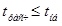
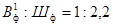
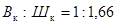
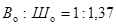

Система нормативных документов в строительстве
СТРОИТЕЛЬНЫЕ
НОРМЫ И ПРАВИЛА
РОССИЙСКОЙ ФЕДЕРАЦИИ
ОБЩЕСТВЕННЫЕ ЗДАНИЯ
И СООРУЖЕНИЯ
СНиП 31-06-2009
Актуализированная редакция
СНиП 2.08.02-89*
МИНИСТЕРСТВО РЕГИОНАЛЬНОГО РАЗВИТИЯ
РОССИЙСКОЙ ФЕДЕРАЦИИ
(МИНРЕГИОН РОССИИ)
Москва 2009
ПРЕДИСЛОВИЕ
СНиП 31-06-2009 является актуализированной редакцией СНиП 2.08.02-89*, утвержден приказом Минрегиона России от 1 сентября 2009 г. № 390 и вводится в действие с 1 января 2010 г.
ВЗАМЕН СНиП 2.08.02-89*.
СОДЕРЖАНИЕ
В разделах 3, 5 - 7 и 9 настоящих норм приведены требования, соответствующие целям технических регламентов и подлежащие обязательному соблюдению с учетом части 1 статьи 46 Федерального закона «О техническом регулировании». В разделе 8 настоящих норм приведены требования, соответствующие целям Федерального закона «Об энергосбережении».
Актуализация выполнена авторским коллективом: ОАО «Институт общественных зданий» (рук. темы - канд. архит. A.M. Гарнец; канд. архит. Л.А. Смывина, инж. Л.В. Сигачева); ГУП «МНИИП Моспроект-4» (д-р архит. А.В. Анисимов); ФГУП ЦНИИСК им. В.А. Кучеренко (канд. техн. наук В.Н. Зигерн-Корн); ОАО «ЦНС» (канд. архит. Л.А. Викторова); ЗАО «Гипроздрав - НПЦ по объектам здравоохранения и отдыха» (канд. архит. Л.Ф. Сидоркова, техн. М.В. Толмачева); МГСУ (д-р техн. наук В.В. Холщевников); ГУП «Моспроект-2 им. М.В. Посохи-на» (архит. А.Г. Локшин); ОАО «МосОтис» (инж. СМ. Ройт-бурд); ФГУП «ВНИИ физической культуры» (архит. Ю.Г. Жура); НПФ «Поток Интер» (инж. А.В. Наголкин); ГУП «МНИИТЭП» (инж. В.А. Ионин).
СНиП 31-06-2009
СТРОИТЕЛЬНЫЕ НОРМЫ И ПРАВИЛА РОССИЙСКОЙ ФЕДЕРАЦИИ
|
ОБЩЕСТВЕННЫЕ ЗДАНИЯ И СООРУЖЕНИЯ PUBLIC BUILDINGS AND WORKS |
Дата введения 2010-01-01
1.1. Настоящие нормы и правила распространяются на проектирование новых, реконструируемых и капитально ремонтируемых общественных зданий высотой до 55 м* с подвальным этажом и многоуровневыми стоянками для автомобилей, проектируемыми по СНиП 21-02. Требования настоящих норм распространяются также на помещения общественного назначения, встроенные в жилые здания и другие объекты, соответствующие санитарно-эпидемиологическим требованиям к общественным зданиям, встраиваемым в эти объекты (далее - общественные здания).
___________
* 3десь и далее, кроме специально оговоренных случаев, высота здания определяется высотой расположения верхнего этажа, не считая верхнего технического этажа, а высота расположения этажа определяется разностью отметок поверхности проезда для пожарных машин и нижней границы открывающегося проема (окна) в наружной стене.
1.2. Для помещений общественного назначения, встроенных в жилые здания и встроенно-пристроенных к ним, следует учитывать также требования СНиП 31-01.
1.3. Размещение в общественных зданиях и сооружениях помещений иного назначения допускается при условии соблюдения экологических, санитарно-эпидемиологических и требований по безопасности, соответствующих общественным зданиям.
1.4. Положения настоящих норм следует соблюдать при проектировании зданий и помещений учреждений и предприятий различных форм собственности и различных организационно-правовых форм.
1.5. Перечень основных групп зданий и помещений общественного назначения, на которые распространяются настоящие нормы и правила, приведен в приложении А.
1.6. Термины, применяемые в тексте, и их определения даны в приложении Б.
1.7. Настоящие нормы не распространяются на проектирование сезонных и мобильных зданий и сооружений общественного назначения.
Нормативные документы, на которые в тексте настоящих норм имеются ссылки, приведены в приложении В.
3.1. Планировка и оборудование зданий, групп помещений или отдельных помещений, а также участков учреждений общественного назначения, предназначенных для непосредственного обслуживания населения и доступных, в соответствии с заданием на проектирование, для инвалидов и других маломобильных групп посетителей (зрителей, покупателей, учащихся и т.д.), должны соответствовать требованиям СНиП 35-01, а также СП 35-101 и СП 35-103.
3.2. Правила подсчета общей, полезной и расчетной площади, строительного объема, площади застройки и этажности зданий приведены в приложении Г.
3.3. Высота помещений в чистоте (от пола до потолка) принимается для общественных зданий, как правило, не менее 3 м. Для учебных помещений общеобразовательных учреждений высота в чистоте - не менее 3,6 м; в затесненной застройке разрешается принимать высоту этажа от пола до пола 3,6 м.
Высоту помещений, определяемую функциональными процессами, следует устанавливать по соответствующим технологическим нормам и требованиям.
В помещениях и коридорах вспомогательного к функциональным процессам назначения в зависимости от объемно-планировочного решения зданий и технологических требований допускается соответствующее уменьшение высоты. При этом высота должна быть не менее 2,2 м.
Высоту встраиваемых помещений общественного назначения общей вместимостью до 40 человек, а предприятий розничной торговли торговой площадью до 250 м2 допускается принимать по высоте этажа жилого здания, куда они встраиваются.
3.4. Высота технического этажа определяется в зависимости от вида размещаемых в нем инженерного оборудования, инженерных сетей и оптимальных условий их эксплуатации. Высота в местах прохода обслуживающего персонала до низа выступающих конструкций должна быть не менее 1,8 м.
В техническом этаже (техническом подполье), предназначенном для размещения только инженерных сетей с трубопроводами и изоляцией трубопроводов из негорючих материалов, высота от пола до потолка должна быть не менее 2,1 м.
3.5. Отметка пола помещений у входа в здание должна быть, как правило, выше отметки тротуара перед входом не менее чем на 0,15 м.
Допускается принимать отметку пола у входа в здание менее 0,15 м (в том числе и заглубление ниже отметки тротуара) при условии предохранения помещений от попадания осадков.
3.6. Перечень помещений общественных зданий, которые допускается располагать в цокольном и подвальном этажах, приведен в приложении Д.
3.7. В отдельных общественных зданиях, определяемых по схеме размещения сооружений гражданской обороны, следует предусматривать помещения двойного назначения в соответствии с заданием на проектирование.
3.8. В общественных зданиях в качестве средств вертикального транспорта могут быть использованы лифты, эскалаторы, пассажирские конвейеры (траволаторы), платформы подъемные для инвалидов, а также другие устройства для вертикального транспортирования с учетом технологии функционирования объекта проектирования.
3.9. Пассажирские лифты предусматриваются:
в общественных зданиях - при отметке пола верхнего этажа 9,9 м и более от уровня первого этажа;
в санаториях и санаториях-профилакториях; в гостиницах, турбазах и мотелях разряда «три звезды» - при отметке пола верхнего этажа 6,6 м и более от уровня первого этажа;
в зданиях больниц и родильных домов, амбу-латорно-поликлинических учреждений; в зданиях учреждений социального обслуживания населения, а также в гостиницах и мотелях разрядов «пять звезд» и «четыре звезды» - при любой высоте здания.
Допускается не предусматривать установку лифта при надстройке существующего здания мансардным этажом.
Больничные лифты следует предусматривать:
в зданиях больниц (исключая административный корпус), родильных домов, хосписов, в домах сестринского ухода, реабилитационных центрах; в домах-интернатах для инвалидов, в санаториях и санаториях-профилакториях при расположении палатных (жилых) отделений на 2-м этаже и выше, включая этаж, на который транспортируются больные для перемещения в другие корпуса.
Пассажирские лифты допускается не устанавливать, если конструкция и система управления больничных лифтов приспособлены также и для транспортирования пассажиропотоков, а их количество достаточно по расчету провозной способности указанных лифтов.
Необходимость установки грузовых лифтов и других средств вертикального транспорта, не указанных в настоящем пункте, следует предусматривать в соответствии с технологическими требованиями.
3.10. При наличии в общественном здании на втором этаже (уровне) и выше помещений, предназначенных в том числе для обслуживания инвалидов, пассажирские лифты или подъемные устройства для инвалидов следует проектировать в соответствии со СНиП 35-01.
3.11. Число пассажирских лифтов следует устанавливать расчетом, но не менее двух. Допускается второй лифт заменять грузовым, в котором разрешено транспортировать людей, если по расчету вертикального транспорта в здании достаточно установки одного пассажирского лифта.
Один из лифтов в здании (пассажирский или грузовой) должен иметь глубину кабины не менее 2100 мм для возможности транспортирования человека на носилках скорой помощи.
3.12. Расстояние от дверей наиболее удаленного помещения до двери ближайшего пассажирского лифта должно быть не более 60 м.
Ширина лифтового холла пассажирских лифтов должна быть, не менее:
при однорядном расположении лифтов - при глубине кабины лифта до 1,5 м - 2,0 м, свыше 1,5 до 2,0 м - 2,5 м, свыше 2,0 м - 1,3 глубины кабины лифта;
при двухрядном расположении с общим лифтовым холлом - удвоенной наименьшей глубины кабины, но не более 5 м.
Перед лифтами с глубиной кабины 2100 мм и более ширина лифтового холла должна быть не менее 2,5 м.
3.13. Вентиляционные камеры, шахты и машинные отделения лифтов, насосные, машинные отделения холодильных установок, тепловые пункты и другие помещения с оборудованием, являющимся источником шума и вибраций, как правило, не следует располагать смежно, над и под зрительными и репетиционными залами, сценами, звукоаппаратными, читальными залами, палатами, кабинетами врачей, операционными, помещениями с пребыванием детей в детских учреждениях, учебными помещениями, рабочими помещениями и кабинетами с постоянным пребыванием людей, жилыми помещениями, размещенными в общественных зданиях.
Смежное размещение указанных помещений допустимо при обеспечении в них нормативных уровней звукового давления и вибрации.
3.14. В общественных зданиях следует предусматривать хозяйственно-питьевое, противопожарное и горячее водоснабжение, канализацию и водостоки, в соответствии с требованиями СНиП 2.04.01 и приложения И.
3.15. В общественных зданиях следует предусматривать системы отопления, вентиляции или кондиционирования, обеспечивающие соответствующую температуру, влажность, очистку и обеззараживание воздуха.
Отопление, вентиляция, кондиционирование воздуха общественных зданий следует проектировать в соответствии с СНиП 41-01, СанПиН 2.1.3.1375, СП 2.5.1198, ГОСТ 30494, ГОСТ Р ИСО 14644.4, ГОСТ Р 52539 и требованиями настоящих норм.
3.16. В общественных зданиях следует предусматривать электрооборудование электроосвещение, сеть телефонной связи с выходом на телефонные сети общего пользования, сеть приема телевидения и радиовещания, сеть проводного вещания.
При технико-экономическом обосновании, а также в соответствии с заданием на проектирование комплексы зданий, отдельные здания или помещения оборудуются электрочасовыми установками, системой охранной сигнализации, системами информатизации и звукофикации, системами автоматизации и диспетчеризации инженерного оборудования зданий и другими видами устройств.
Системы пожарной сигнализации и оповещения о пожаре должны предусматриваться в соответствии с требованиями СП 3.13130 и СП 5.13130.
Здания дошкольных образовательных учреждений, школ, домов-интернатов для инвалидов и престарелых, домов для детей-инвалидов должны быть оборудованы каналом передачи информации автоматической пожарной сигнализации в пожарную часть.
3.17. При проектировании в общественных зданиях помещений, оснащенных видеодисплейными терминалами, ПЭВМ и другими средствами вычислительной техники, следует учитывать требования СанПиН 2.2.2/2.4.1340 и возможность выхода в Интернет.
3.18. Электротехнические устройства общественных зданий, а в необходимых случаях - резервные источники электроснабжения следует проектировать в соответствии с требованиями СП 31-110, ГОСТ Р 50571.28 и Правилами устройства электроустановок.
3.19. Молниезащита общественных зданий выполняется с учетом наличия телевизионных антенн и трубостоек телефонной сети или сети проводного вещания в соответствии с СО 153-34.21.122.
3.20. Системы бытового газоснабжения общественных зданий следует предусматривать в соответствии со СНиП 42-01.
Установка газового оборудования в кухнях дошкольных образовательных учреждений, буфетах и кафе театров и кинотеатров не допускается.
В лечебных учреждениях должно предусматриваться централизованное медицинское газоснабжение в соответствии с ГОСТ 12.2.052, ОСТ 290.004 и ПБ 03-576.
3.21. Сквозные проемы в зданиях и сооружениях на уровне земли или первого этажа (пешеходные и другие проходы или проезды), не предназначенные для проезда пожарных машин, допустимо делать любой конфигурации при соблюдении высоты, необходимой для беспрепятственного прохода или проезда.
Сквозные проезды в зданиях следует принимать шириной (в свету) не менее 3,5 м и высотой не менее 4,25 м.
3.22. Размеры земельных участков общественных зданий, а также нормы расчета учреждений и предприятий обслуживания принимаются в соответствии со СНиП 2.07.01. Участки общественных зданий, жилых и других зданий должны размещаться в пределах красных линий, установленных в проектах планировки, разработанных на основании генеральных планов и правил землепользования и застройки поселений.
3.23. В зданиях I, II и III климатических районов и IV климатического подрайона при всех наружных входах в вестибюль и лестничные клетки следует предусматривать на первом этаже тамбуры глубиной не менее 1,2 м и шириной, равной ширине входной двери плюс не менее 0,3 м. Тамбуры должны иметь естественное освещение.
Входы в здания в климатических подрайонах Ia, Iб и Iг должны иметь тамбуры, планировка и размещение которых должны предусматривать возможность устройства как прямого (сквозного) прохода в здание, так и бокового (с поворотом).
3.24. Крыши следует проектировать с учетом следующих требований:
- до двух этажей включительно - неорганизованный водосток при обязательном устройстве козырьков над входами и балконами второго этажа, вынос карниза при этом должен быть не менее 0,6 м;
- до пяти этажей включительно - должен быть предусмотрен наружный организованный водосток;
- шесть и более этажей - должен устраиваться внутренний водосток.
На крыше зданий выше 10 м следует предусматривать ограждение в соответствии с ГОСТ 25772.
3.25. Проектирование общественных зданий и сооружений, имеющих параметры за пределами настоящих норм и требований, а также при отсутствии технологических норм их проектирования производится по специальным техническим условиям в соответствии с установленным порядком.
4.1. Состав помещений и их площади определяются в соответствии с технологией функциональных процессов соответствующих типов общественных зданий и в соответствии с расчетными нормативами, приведенными в настоящих нормах.
4.2. Снижение норм площадей, установленных для отдельных помещений или групп помещений, не должно превышать 10 %; а для помещений, встроенных в жилые дома, -15 %. Указанное снижение норм не должно ухудшать процесс деятельности в данных помещениях.
4.3. В дошкольных образовательных учреждениях (в дальнейшем - ДОУ) состав и площади основных помещений полнокомплектной групповой ячейки (для учреждений общего типа), а также малокомплектных групповых ячеек принимаются по таблице 4.1. Площади основных помещений дошкольных учреждений компенсирующего вида с учетом вида заболеваний следует принимать поСанПиН 2.4.1.1249.
Таблица 4.1
|
Полнокомплектная групповая ячейка (универсальная для ясельной и дошкольной групп), м2 |
Малокомплектная групповая ячейка |
||
|
ясельная, на 1 ребенка, не менее, м2 |
дошкольная, на 1 ребенка, не менее, м2 |
||
|
Групповая |
50 |
2,5 |
2,0 |
|
Спальня |
50 |
1,8 |
2,0 |
|
Раздевальная |
18 |
1,0 |
1,0 |
|
Туалетная |
16 |
0,8 |
0,9 |
|
Буфетная |
3,8 |
3,8 |
3,8 |
4.4. Групповые ячейки разновозрастных групп ДОУ следует размещать обособленно друг от друга и других помещений.
Раздевальные групп дошкольного возраста, размещенных на втором или третьем этаже, могут предусматриваться на первом этаже.
4.5. В зданиях ДОУ в IА, IБ и IГ климатических подрайонах следует предусматривать отапливаемые прогулочные веранды из расчета на одно место, не менее, м2:
1,8 - для детей ясельного возраста;
2 - для детей дошкольного возраста.
Прогулочные веранды для детей ясельного и дошкольного возрастов должны быть раздельными.
4.6. Из каждой групповой ячейки должно быть не менее двух рассредоточенных эвакуационных выходов.
4.7. Площадь помещений для групп кратковременного пребывания дошкольников при жилых домах (подготовительные к школе и прогулочные группы) следует принимать для каждой группы: групповая - 40 м2, раздевальная - 18 м2, туалетная - 16 м2, буфетная - 3,8 м2.
В состав помещений должна входить также комната (гардеробная) персонала с уборной.
4.8. В ДОУ общего типа следует предусматривать два зала: один для музыкальных, другой для физкультурных занятий площадью не менее 100 м2 каждый. В ДОУ вместимостью до 5 групп (100 мест) включительно допускается один общий зал для музыкальных и физкультурных занятий. Залы не должны быть проходными.
4.9. Размеры ванн бассейнов в ДОУ общего типа следует принимать шириной 3 - 4 м, длиной 6-7 м. Глубина воды должна быть от 0,6 до 0,8 м.
4.10. Учебные секции для 1-го класса и 2 - 4-х классов должны быть обособленными и непроходными для учащихся других возрастных групп.
4.11. Площади основных учебных помещений общеобразовательных учебных заведений (в дальнейшем - школы), учреждений начального и среднего профессионального образования, учреждений высшего профессионального образования (в дальнейшем - высшие учебные заведения) следует принимать по таблице 4.2.
Таблица 4.2
|
Площадь |
|
|
Классы-кабинеты школ при формах занятий: |
|
|
фронтальных |
2,5 |
|
смешанных и индивидуальных |
3,0 |
|
групповых |
3,5 |
|
Специальные кабинеты и лаборатории по естественным наукам (кроме высших учебных заведений) |
3,0 |
|
Лекционные аудитории до 75 мест в гимназиях и лицеях |
1,0 |
|
Лаборатории общетеоретического (общеобразовательного) профиля: |
|
|
в учреждениях среднего профессионального образования |
2,5 |
|
в высших учебных заведениях |
4,0 |
|
Лаборатории и кабинеты профессионально-технического и специального профиля: |
|
|
в учреждениях начального и среднего профессионального образования |
2,4* |
|
в высших учебных заведениях |
6,0 |
|
Кабинет информатики и вычислительной техники, компьютерный класс |
6 (на 1 место у дисплея) |
|
Лингафонные кабинеты: |
|
|
во всех образовательных учреждениях, кроме высших учебных заведении |
2,4 |
|
в высших учебных заведениях |
3,0 |
|
Кабинеты черчения, курсового и дипломного проектирования: |
|
|
в учреждениях начального и среднего профессионального образования |
2,4 |
|
в высших учебных заведениях |
3,6 |
|
Аудитории с числом мест: |
|
|
12 - 15 |
2,5 |
|
25 |
2,2 |
|
30 |
1,8 |
|
в учреждениях начального и среднего профессионального образования |
1,2 |
|
50 - 150 |
|
|
в высших учебных заведениях и учебных комбинатах: |
|
|
От 50 до 75 |
1,5 |
|
» 76 » 100 |
1,3 |
|
» 101 » 150 |
1,2 |
|
» 151 » 350 |
1,1 |
|
351 и более |
1,0 |
|
Мастерские трудового обучения и общественно-полезного труда (кроме учебно-производственных мастерских) в школах |
7,5 |
|
* В общую площадь лаборатории необходимо дополнительно включать площадь для размещения технологического оборудования по профилю обучения. Примечание - Площадь учебных помещений, не приведенных в таблице 4.2, устанавливается заданием на проектирование. |
|
4.12. При проектировании учебных помещений образовательных учреждений, оснащенных вычислительной техникой, следует руководствоваться СанПиН 2.2.2/2.4.1340 и СанПиН 2.4.2.1178. Необходимо предусматривать выход локальной компьютерной сети здания в глобальную компьютерную сеть (Интернет).
4.13. Спальные комнаты в школах-интернатах и интернатах при школах следует предусматривать площадью не менее 4 м2 на одного учащегося.
Площадь спальной - игровой комнаты для учащихся первого класса школ следует принимать из расчета не менее 2,5 м2 на одного учащегося.
4.14. В зданиях школ следует предусматривать медицинские помещения, состав и площадь которых устанавливаются в задании на проектирование.
4.15. Площадь административных помещений общественных зданий следует принимать по СНиП 31-05. При этом следует учитывать, что на одного работника в этих помещениях должно приходиться не менее 6 м2 без учета площади, предназначенной для размещения оргтехники.
4.16. Лабораторные и производственные помещения технического и естественного направления в зданиях образовательного и административного назначения следует проектировать с учетом требований СНиП 31-03.
4.17. Вместимость палат лечебных учреждений должна быть не более 4 коек. Вместимость палат для новорожденных, послеоперационных, палат реанимации и интенсивной терапии должна быть не более 12 коек.
Ориентировочную площадь в палатах лечебных учреждений от двух коек и более следует принимать по расчетному показателю площади на 1 место по таблице 4.3.
Таблица 4.3
|
Площадь |
|
|
Для взрослых |
|
|
Ортопедотравматологические, нейрохирургические, ожоговые, радиологические, восстановительного лечения и др. для больных, передвигающихся с помощью кресел-колясок |
10 |
|
Интенсивной терапии |
15 |
|
Послеоперационные |
13 |
|
Прочие |
8 |
|
Для детей до 7 лет |
|
|
С дневным пребыванием матерей |
9,0 |
|
С круглосуточным пребыванием матерей |
12 |
|
Ортопедотравматологические, нейрохирургические, ожоговые, радиологические, восстановительного лечения и др. для больных, передвигающихся с помощью кресел-колясок |
10 |
|
Интенсивной терапии |
15 |
|
Послеоперационные |
13 |
|
Прочие |
6,0 |
|
Для новорожденных |
4,5 |
|
В палатах для детей с дневным пребыванием матерей |
10 |
|
С круглосуточным пребыванием матерей |
9,0 |
|
Интенсивной терапии, послеоперационные для новорожденных |
9,0 |
Минимальная площадь однокоечных палат (без учета площади шлюзов и санузлов) приведена в таблице 4.4.
Таблица 4.4
|
Площадь |
|
|
Медико-социальные (в домах и отделениях сестринского ухода и хосписах) |
14 |
|
Восстановительного лечения, нейрохирургические, ортопедотравматологические, ожоговые, радиологические и палаты для больных, передвигающихся с помощью кресел-колясок |
12 |
|
Для новорожденных |
6 |
|
Для детей до 7 лет с круглосуточным пребыванием матерей |
14 |
|
Для взрослых или детей старше 7 лет 16 с сопровождающим |
16 |
|
Для ожоговых больных |
18 |
|
Интенсивной терапии и послеоперационные |
18 |
|
Прочие |
12 |
4.18. Процедурные рентгеновских кабинетов, кабинетов и помещений отделений лучевой терапии, в которых находятся источники ионизирующих излучений, помещения лабораторий радиоизотопной диагностики, где ведутся работы I и II классов, не допускается размещать смежно (по горизонтали или вертикали) с палатами для беременных и детей.
4.19. Расчетный показатель площади жилых комнат в санаториях, санаториях-профилакториях и учреждениях отдыха на одно место следует принимать по таблице 4.5.
Площадь жилой комнаты должна быть не менее 12 м2.
Таблица 4.5
|
Площадь, м2, |
|
|
Санатории, санатории-профилактории, а также учреждения отдыха для взрослых (или семей с детьми) |
9,0 |
|
Детские оздоровительные и оздоровительные лагеря для старшеклассников |
6,0 |
|
Санаторные детские оздоровительные лагеря |
7,0 |
4.20. Площадь зрительных залов следует принимать по расчетному показателю площади на одно место, не менее, м2, для:
|
кинотеатров круглогодичного действия |
1,0; |
|
» сезонного » |
0,9; |
|
клубов |
0,65; |
|
театров, концертных и универсальных залов |
0,7; |
|
малых, камерных театров |
0,9. |
Площадь зрительного зала с балконами, ложами и ярусами следует определять в пределах ограждающих конструкций:
для кинотеатров - включая эстраду;
для клубов, театров, концертных и универсальных залов - до передней границы эстрады, сцены, авансцены, арены или барьера оркестровой ямы.
Высота уровня планшета сцены (авансцены, эстрады) над уровнем пола первого ряда зрительских мест в залах с горизонтальным полом должна быть не более 1,1м.
4.21. Площадь конференц-залов следует принимать по расчетному показателю площади на одно место, не менее, м2:
|
в залах до 150 мест: |
|
|
с пюпитрами у кресел |
1,25; |
|
без пюпитров |
1,1; |
|
в залах на 150 и более мест: |
|
|
с пюпитрами у кресел |
1,1; |
|
без пюпитров |
1,0. |
4.22. Площадь актового зала (без учета эстрады) следует принимать по расчетному показателю на одно зрительское место, не менее, м2:
|
в общеобразовательных учреждениях, учреждениях начального и среднего профессионального образования |
0,65; |
|
в высших учебных заведениях |
0,8. |
4.23. Площадь фойе следует принимать по расчетному показателю площади на одно зрительское место в залах, не менее, м2:
|
при актовых залах учреждений начального и среднего профессионального образования, кинозалах и спортивно-зрелищных залах |
0,4; |
|
в театрах, клубах, концертных залах, при актовых залах высших учебных заведений |
0,6; |
|
в кинотеатрах |
0,55; |
|
в кинотеатрах с универсальным залом |
0,7; |
|
в детских кинотеатрах |
0,8. |
Рекреации общеобразовательных учреждений проектируются из расчета 2 м2 на учащегося, как правило, в виде зальных помещений. Рекреации учреждений начального и среднего профессионального образования проектируются из расчета 0,6 м2 на учащегося, а в высших учебных заведениях и учебных комбинатах - 0,5 м2 на учащегося.
4.24. Параметры киноэкрана и зрительного зала в культурно-зрелищных учреждениях при оборудовании киноустановками приведены в приложении Е.
4.25. Объем зрительных залов и аудиторий рекомендуется принимать на одно зрительское место, не менее, м3:
|
драматических театров |
4 - 5; |
|
кинотеатров |
4 - 6; |
|
клубов |
4 - 7; |
|
музыкально-драматических театров и театров музыкальной комедии |
5 - 7; |
|
театров оперы и балета |
6 - 8; |
|
аудиторий |
4 - 5; |
|
концертных залов |
по заданию на проектирование |
Примечание - В зависимости от объемно-планировочного решения зала допускается увеличение или уменьшение указанных величин на 20 %, а при применении соответствующих инженерных решений - более чем на 20 %.
4.26. Размещение актовых и спортивных залов учебных заведений, их общую площадь, а также набор помещений для клубной работы следует уточнять, в зависимости от местных условий, исходя из возможности обслуживания населения указанными помещениями.
4.27. Общую площадь физкультурно-спортивных залов и помещений (без учета вспомогательных помещений при них) следует принимать из расчета на одного занимающегося, не менее, м2:
|
основная и полная средняя школа |
0,9; |
|
учебные заведения начального, среднего и высшего профессионального образования |
1,0; |
|
учебные заведения последипломного образования |
0,2. |
Размеры и устройство физкультурно-спортивных залов и вспомогательных помещений при них определяются в соответствии с требованиями СанПиН 2.4.2.1178, СанПиН 2.1.2.1188, части 1 и 2 СП 31-112.
Необходимость устройства бассейна и легкоатлетического манежа устанавливается заданием на проектирование.
4.28. Площадь читального зала в массовых библиотеках централизованной библиотечной системы следует принимать не менее 2,4 м2 на одно читательское место (при оборудовании читального зала одно- или двухместными столами).
4.29. Площадь помещений закрытого хранения библиотечных фондов и архивных документов следует принимать не менее 2,5 м2 на 1000 единиц хранения.
Площадь зоны фондов открытого доступа читальных залов и абонемента должна быть не менее 4,5 м2 на 1000 единиц хранения.
4.30. Общую площадь библиотеки учебных заведений следует принимать по расчетному показателю площади на одного учащегося (студента), не менее, м2:
|
в школах и учреждениях начального профессионального образования |
0,6; |
|
в учреждениях среднего профессионального образования |
0,8; |
|
в высших учебных заведениях: |
|
|
технического профиля |
1,1; |
|
гуманитарного и медицинского профиля |
1,3; |
|
культуры |
2,3. |
4.31. Площадь обеденного зала (без раздаточной) следует принимать по расчетному показателю площади на одно посадочное место в зале, не менее, м2:
|
в школах (на 1/3 численности учащихся, преподавателей, администрации): |
|
|
до 80 мест в зале |
0,75; |
|
на 80 и более мест в зале |
0,7; |
|
в учреждениях начального профессионального образования |
0,8; |
|
в учреждениях среднего профессионального образования |
1,3; |
|
при высших учебных заведениях |
1,8; |
|
при больницах восстановительного лечения ортопедического и неврологического профиля, при социальных учреждениях с инвалидами на креслах-колясках |
2,5; |
|
при лечебных и социальных учреждениях со стационаром |
1,2; |
|
в ресторанах |
1,8; |
|
то же, с эстрадой и танцплощадкой |
2,0; |
|
в столовых общедоступных |
1,8; |
|
в кафе, закусочных и пивных барах |
1,6; |
|
в кафе-автоматах, предприятиях быстрого обслуживания и безалкогольных барах, в туристских хижинах и приютах |
1,4; |
|
в детских оздоровительных лагерях (летних) и оздоровительных лагерях для старшеклассников |
1,0; |
|
в санаторных детских оздоровительных лагерях |
1,4; |
|
в санаториях, санаториях-профилакториях, домах (пансионатах) отдыха, базах отдыха, молодежных лагерях, туристских базах: при самообслуживании (включая раздаточную линию) |
1,8; |
|
при обслуживании официантами |
1,4. |
Площадь обеденных залов в специализированных предприятиях общественного питания следует принимать по заданию на проектирование.
4.32. В общественных зданиях вестибюль принимается - 0,2 - 0,3 м2, а гардероб - 0,15 м2 на одного расчетного посетителя.
4.33. Санитарно-бытовые помещения следует предусматривать раздельно для обслуживающего персонала, работающих и т.п., а также для посетителей, зрителей и т.п. Для расчета санитарных приборов соотношение мужчин и женщин принимается 1:1, если иное не указано в задании на проектирование.
4.34. Расчетная нагрузка на один санитарный прибор назначается в зависимости от типа общественного здания:
мужчины - 1 унитаз на: от 20 до 30 чел. (для сотрудников, школьников), от 50 до 60 чел. (для посетителей); 1 писсуар на: от 15 до 18 чел. (для сотрудников), от 50 до 80 чел. (для посетителей), 0,5 лоткового писсуара (для 30 школьников); 1 умывальник на 4 унитаза (но не менее 1 на уборную);
женщины - 1 унитаз на: не более 15 чел. (для сотрудников), 20 чел. (для школьниц); от 25 до 30 чел. (для посетителей); 1 умывальник на 2 унитаза (но не менее 1 на уборную).
Примечания: 1. Конкретное количество приборов уточняется в зависимости от назначения учреждения. 2. Набор дополнительных санитарных приборов и их пропускная способность в зданиях дошкольных образовательных учреждений, стационаров лечебных и социальных учреждений, в физкультурно-спортивных сооружениях устанавливаются технологическим заданием.
4.35. В женских уборных для работающих в общественном здании, для артистов и персонала зрительского или клубного комплекса, в общежитиях учебных заведений, спальных корпусах интернатов дополнительно предусматриваются гигиенический душ, биде или другое гигиеническое оборудование. Размещать его следует в одной кабинке совместно с унитазом.
4.36. Помещения уборных в общественных зданиях и сооружениях (кроме открытых спортивных сооружений) следует размещать на расстоянии, не превышающем 75 м от наиболее удаленного места постоянного пребывания людей.
На открытых плоскостных спортивных сооружениях, лыжных и гребных базах и т.п. расстояние от мест занятий или самого удаленного места на трибунах для зрителей до уборных не должно превышать 150 м.
При сезонном использовании зданий или открытых сооружений в неканализованных районах следует выделять специальные места для установки биотуалетов.
4.37. При палатах стационаров лечебных и социальных учреждений следует предусматривать приближенные санитарные узлы. Двери санузлов могут открываться как в шлюз при палате, так и непосредственно в палату.
4.38. В зданиях следует предусматривать помещения для хранения, очистки и сушки уборочного инвентаря, оборудованные системой горячего и холодного водоснабжения и, как правило, смежные с уборными. Площадь этих помещений следует принимать из расчета 0,8 м2 на каждые 100 м2 площади этажа, но не менее 4 м2.
5.1. Здание должно быть возведено и оборудовано таким образом, чтобы предупредить возможность получения травм посетителями и работающими в нем при передвижении внутри и около здания, при входе и выходе из здания, а также при пользовании его подвижными элементами и инженерным оборудованием.
5.2. По требованию заказчика-застройщика в состав документации на здания должна дополнительно включаться инструкция по эксплуатации. Она должна содержать требования и положения, необходимые для обеспечения безопасности зданий и сооружений в процессе эксплуатации, в том числе сведения об основных конструкциях и инженерных системах, схемы расположения скрытых элементов каркаса, скрытых электропроводок и инженерных сетей, а также предельные значения нагрузок на элементы конструкций здания и на его электросеть. Эти данные могут быть представлены в виде копий исполнительной документации.
5.3. Применение ступеней с разными параметрами высоты и глубины в пределах марша не допускается.
5.4. Допускается предусматривать в зданиях всех степеней огнестойкости во всех климатических районах в качестве второго эвакуационного выхода наружные открытые лестницы (лестницы 3-го типа) с уклоном не более 45°. Эти лестницы, используемые для эвакуации со второго этажа в зданиях ДОУ (кроме зданий ДОУ, школ и школ-интернатов для детей с нарушениями физического и умственного развития, стационаров лечебных учреждений), следует предусматривать с уклоном не более 30°.
Допускается устройство наружных открытых лестниц на высоту до 3-го этажа включительно. Лестницы должны располагаться не ближе 1 м от оконных проемов, не считая окна с дверью, при поэтажных выходах на лестницу.
Ширина таких лестниц должна быть не менее 0,8 м, а ширина сплошных проступей их ступеней - не менее 0,2 м.
5.5. Размер входной площадки перед наружной дверью в здание для посетителей должен быть по направлению движения не менее 1,5 ширины полотна наружной двери.
Наружные лестницы и площадки (используемые посетителями) высотой от уровня тротуаров более 0,45 м при входах в здания должны иметь ограждения.
5.6. Уклон маршей лестниц в надземных этажах следует принимать, как правило, 1:2. Допускается в зданиях с лифтами для второй лестницы, не используемой постоянно посетителями, применять уклон не круче 45°.
Уклон маршей лестниц, ведущих в подвальные и цокольные этажи, на чердак, а также лестниц в надземных этажах, не предназначенных для эвакуации людей и использования посетителями, допускается принимать 1:1,5.
Уклон пандусов на путях передвижения людей не должен превышать:
|
внутри здания, сооружения |
1:6; |
|
снаружи |
1:8; |
|
на путях передвижения инвалидов на креслах-колясках, в том числе в стационарах лечебных учреждений |
от 1:10 |
Примечание - В зрительных залах в проходах и при входе в ряд допускаются ступени размером 0,2´0,2 м.
5.7. Уклон лестниц трибун для зрителей открытых или крытых спортивных сооружений не должен превышать 1:1,6, а при наличии вдоль путей эвакуации по лестницам трибун поручней на высоте не менее 0,9 м (или иных устройств, их заменяющих) - 1:1,4.
Наличие лестниц или ступеней в люках на путях эвакуации не допускается.
5.8. Ширина лестничного марша в общественных зданиях должна быть не менее ширины выхода на лестничную клетку с наиболее населенного этажа, но не менее, м:
1,35 - для лестниц зданий с числом пребывающих в наиболее населенном этаже более 100 человек, а также для зданий клубов, кинотеатров и лечебных учреждений независимо от числа мест;
1,2 - для лестниц остальных зданий, а также в зданиях кинотеатров, клубов, ведущих в помещения, не связанные с пребыванием в них зрителей и посетителей, и в зданиях лечебных учреждений, ведущих в помещения, не предназначенные для пребывания или посещения больных;
0,9 - для лестниц, ведущих в помещение с числом одновременно пребывающих в нем до 5 человек.
Ширина лестничных маршей в корпусах учебном, учебно-лабораторном и лекционно-аудиторном высших учебных заведений должна быть не менее 1,5 м.
Ширина лестничных площадок должна быть не менее ширины марша. Промежуточная площадка в прямом марше лестницы должна иметь глубину не менее 1 м.
При установке на лестничных площадках радиаторов отопления на любой высоте должны обеспечиваться нормативные ширина и высота прохода.
5.9. В полу на путях движения не допускаются перепады высотой менее трех ступеней (при высоте ступеней не менее 0,12 м) и пороги выше 0,05 м. На перепадах меньшей высоты следует предусматривать пандус с уклоном, который не должен превышать 1:6.
5.10. При перепаде отметок пола более 1 м в одном или в смежных помещениях (не отделенных перегородкой) по периметру верхнего уровня необходимо предусматривать ограждение высотой не менее 0,9 м или иное устройство, исключающее возможность падения людей, в помещениях с детьми - до 1,1 м. Это требование не распространяется на сторону планшета сцены, обращенную к зрительному залу.
5.11. Число подъемов в одном марше между площадками (за исключением криволинейных лестниц) должно быть не менее 3 и не более 16. В одномаршевых лестницах, а также в одном марше двух- и трехмаршевых лестниц в пределах первого этажа допускается не более 18 подъемов.
5.12. Высота ограждений лестниц, балконов, наружных галерей террас и в других местах опасных перепадов высот должна быть не менее 0,9 м.
Ограждения должны быть непрерывными, оборудованы поручнями и рассчитаны на восприятие нагрузок не менее 0,3 кН/м.
Ограждения в зданиях ДОУ и на этажах школ и учебных корпусов школ-интернатов, где расположены помещения первых классов, а также детских поликлиник и стационаров должны отвечать следующим требованиям:
высота ограждений лестниц, используемых детьми, должна быть не менее 1,5 м, а в дошкольных учреждениях для детей с нарушением умственного развития - 1,8 или 1,5 м при сплошном ограждении сеткой;
в ограждении лестниц вертикальные элементы должны иметь просвет не более 0,1 м (горизонтальные членения в ограждениях не допускаются);
высота ограждения крыльца при подъеме на три и более ступеньки должна быть 0,8 м.
5.13. При расчетной ширине лестниц, проходов или люков на трибунах открытых и крытых спортивных сооружений более 2,5 м следует предусматривать разделительные поручни на высоте не менее 0,9 м. При расчетной ширине люка или лестницы менее 2,5 м для люков или лестниц, имеющих ширину более 2,5 м, устройство разделительных поручней не требуется.
5.14. Высота поручней лестничных маршей должна быть равной 0,9 м. Высота поручней в зданиях ДОУ и других учреждений, обслуживающих детей дошкольного возраста, должна быть равной 0,5 м.
5.15. На трибунах спортивных сооружений при разнице отметок пола смежных рядов более 0,55 м вдоль прохода каждого зрительного ряда следует устанавливать ограждение высотой не менее 0,8 м, не мешающее видимости.
5.16. На балконах и ярусах спортивных и зрительных залов перед первым рядом высота барьера должна быть не менее 0,8 м.
На барьерах следует предусматривать устройства, предохраняющие от падения предметов вниз.
5.17. В зданиях театров в комплексе помещений обслуживания сцены следует предусматривать не менее двух лестниц в закрытых лестничных клетках с естественным освещением, имеющих выходы на чердак и кровлю, и две колосниковые лестницы, сообщающиеся с рабочими галереями и колосниками. Незадымляемые лестничные клетки могут быть без естественного освещения.
5.18. Наибольшее число людей, одновременно пребывающих на этаже, при расчете путей эвакуации необходимо определять исходя из расчетной вместимости помещений на данном этаже, в которых могут находиться посетители (учащиеся, зрители и т. п.).
5.19. Ширина дверей выходов из учебных помещений с расчетным числом учащихся более 15 чел. должна быть не менее 0,9 м.
5.20. Коммуникационные пути в зданиях должны обеспечивать в случае пожара безопасную (своевременную и беспрепятственную) эвакуацию по ним людей.
При проектировании зальных помещений необходимое время эвакуации (для обеспечения ее своевременности) с учетом их объема и расстояний от наиболее удаленной точки зала до ближайшего эвакуационного выхода следует принимать по таблицам 5.1а и 5.1б.
Необходимое время эвакуации непосредственно наружу из зданий I-III степеней огнестойкости с залами, перечисленными в таблице 5.1б, следует принимать:
5 мин - для зданий высотой до 17 м включительно;
10 мин - для зданий высотой свыше 17 до 28 м.
Маршруты эвакуации зрителей из этих залов и за их пределами следует проектировать в соответствии с данными, приведенными в приложении Ж.
Время эвакуации по незадымляемым лестничным клеткам не нормируется.
Таблица 5.1а
|
Объем залов, тыс м3 |
Степень огнестойкости |
|||
|
Расстояние, не более, м / необходимое время эвакуации, не более, мин |
||||
|
до 5 |
св. 5 до 10 |
св. 10 |
||
|
1. Залы ожиданий для посетителей, кассовые, выставочные, танцевальные, отдыха и т.п. |
30/2,0 |
45/3,0 |
55/3,5 |
I, II |
|
20/1,5 |
30/2,0 |
- |
III, IV |
|
|
15/1,0 |
- |
- |
V |
|
|
2. Обеденные, читальные - при площади каждого основного прохода из расчета не менее 0,2 м3 на каждого эвакуирующегося по нему человека |
65/2,0 |
- |
- |
I, II |
|
45/1,5 |
- |
- |
III, IV |
|
|
30/1,0 |
- |
- |
V |
|
|
3. Торговые при площади основных эвакуационных проходов, % площади зала: |
|
|
|
|
|
25 и более |
70/1,5 |
90/2,0 |
100/2,5 |
I, II |
|
50/1,0 |
60/1,5 |
- |
III, IV |
|
|
35/0,8 |
- |
- |
V |
|
|
менее 25 |
35/1,5 |
40/2,0 |
50/2,5 |
I, II |
|
20/1,0 |
30/1,5 |
- |
III, IV |
|
|
15/0,7 |
- |
- |
V |
|
Таблица 5.1б
|
Необходимое время эвакуации, не более, мин, |
|||||
|
до 5 |
10 |
20 |
40 |
60 |
|
|
Зрительные залы в театрах, клубах, домах культуры и другие залы с колосниковой сценой |
1,5 |
2 |
2,5 |
2,5 |
- |
|
Зрительные, концертные, лекционные залы и залы собраний, выставочные залы и другие залы без колосниковой сцены (кинотеатры, крытые спортивные сооружения, цирки, столовые и др.) |
2 |
3 |
3,5 |
4 |
4,5 |
|
* При промежуточных объемах необходимое время эвакуации следует определять по интерполяции. Примечания: 1. Необходимое время эвакуации людей с балконов, а также с трибун, размещенных выше отметки, равной половине высоты помещения, уменьшается вдвое по сравнению с данными, приведенными в таблице. 2. Время эвакуации людей из залов и фойе или коридоров, обслуживающих залы, принимается равным необходимому времени эвакуации людей из залов, приведенному в таблице, увеличенному на 1 мин. При этом следует учитывать, что эвакуация людей из залов и фойе или коридоров начинается одновременно. 3 Необходимое время эвакуации людей из помещений зданий III и IV степеней огнестойкости, приведенное в таблице, уменьшается на 30 %, а из помещений зданий V степени огнестойкости - на 50 %. |
|||||
5.21. Расстояние от дверей наиболее удаленных помещений общественных зданий, а в ДОУ - от выхода из групповой ячейки (кроме уборных, умывальных, курительных, душевых и других обслуживающих помещений) до выхода наружу, на лестничную клетку или на лестницу 3-го типа должно быть не более указанного в таблице 5.2.
Расстояния, приведенные в таблице 5.2, следует принимать для зданий: дошкольных образовательных учреждений - по графе 6; школ, учреждений начального, среднего и высшего профессионального образования - по графе 3; стационаров лечебных учреждений - по графе 5; гостиниц-по графе 4. Для остальных общественных зданий плотность людского потока в коридоре определяется по проекту.
Таблица 5.2
|
Расстояние, м, при плотности людского потока, чел/м2 |
|||||
|
до 2 |
св. 2 до 3 |
св. 3 до 4 |
св. 4 до 5 |
св. 5 |
|
|
1 |
2 |
3 |
4 |
5 |
6 |
|
А. Из помещений, расположенных между |
|||||
|
I-III* |
60 |
50 |
40 |
35 |
20 |
|
IV |
40 |
35 |
30 |
25 |
15 |
|
V |
30 |
25 |
20 |
15 |
10 |
|
Б. Из помещений с выходами в тупиковый коридор или холл |
|||||
|
I-III |
30 |
25 |
20 |
15 |
10 |
|
IV |
20 |
15 |
15 |
10 |
7 |
|
V |
15 |
10 |
10 |
5 |
5 |
|
* Расстояния для данной группы зданий приведены при времени эвакуации не более 1 мин. Для других случаев следует выполнять проверку безопасности людей по пункту 6.4 настоящих норм. Примечание - При наличии автоматического пожаротушения и (или) автоматического дымоудаления в помещениях и (или) автоматического дымоудаления в коридорах, холлах, рекреациях и т.п. расстояния, указанные в таблице, и необходимое время эвакуации допускается увеличивать в 1,5 раза. |
|||||
Вместимость помещений, выходящих в тупиковый коридор или холл, должна быть не более 80 человек. Вместимость помещений, выходящих в тупиковый коридор или холл зданий школ, учреждений начального и среднего профессионального образования I - III степеней огнестойкости высотой не более 4 этажей, должна быть не более 125 человек. При этом расстояние от дверей наиболее удаленных помещений до выхода в дальнюю лестничную клетку должно быть не более 100 м.
5.22. Ширина основных эвакуационных проходов в торговом зале должна быть, не менее, м:
|
1,4 - при торговой площади |
до 100 м2; |
|
1,6 - » » » |
от 101 » 150 м2; |
|
1,8 - » » » |
» 151 » 400 м2; |
|
2,2 - » » » |
» 401 м2 и более. |
5.23. Для расчета путей эвакуации число покупателей или посетителей предприятий бытового обслуживания, одновременно находящихся в торговом зале или помещении для посетителей, следует принимать из расчета на одного человека:
для магазинов в городах и поселках городского типа, а также для предприятий бытового обслуживания - 3,0 м2 площади торгового зала или помещения для посетителей, включая площадь, занятую оборудованием;
для магазинов в сельских населенных пунктах и рынков - 2 м2 площади торгового зала.
Число людей, одновременно находящихся в демонстрационном зале и зале проведения семейных мероприятий, следует принимать по расчетному числу мест в зале.
5.24. Расчетное число людей на 1 м ширины путей эвакуации с трибун открытых спортивных сооружений следует принимать по таблице 5.3.
Таблица 5.3
|
Степень огнестойкости сооружений |
||||
|
по лестницам проходов трибуны |
через люк из проходов трибуны |
|||
|
вниз |
вверх |
вниз |
вверх |
|
|
600 |
825 |
620 |
1230 |
I, II |
|
420 |
580 |
435 |
860 |
III и IV |
|
300 |
415 |
310 |
615 |
V |
Общее число зрителей, приходящееся на один эвакуационный люк, не должно превышать: при трибунах с пределом огнестойкости перекрытий под трибунами REI 60 - 1500 чел.; при трибунах с пределом огнестойкости перекрытий под трибунами REI 45 -1000 чел., а при трибунах с другими пределами огнестойкости перекрытий - 750 чел.
5.25. В случае превышения необходимого (расчетного) времени эвакуации или невозможности организации путей эвакуации, приспособленных для инвалидов-колясочников, следует предусматривать устройство пожаробезопасных зон в соответствии с требованиями СНиП 35-01. В качестве пожаробезопасных зон допускается использовать лифтовые холлы лифтов, используемых инвалидами. Расстояние от пожаробезопасных зон до эвакуационных лестничных клеток и лифтов, пригодных для спасения инвалидов, не должно превышать 15 м.
5.26. В крытых спортивных сооружениях расчетное число зрителей, эвакуирующихся через каждый выход (люк, дверь) из зального помещения, должно быть не более 600 человек.
При устройстве партера на спортивной арене при наличии только двух выходов расстояние между ними должно быть не менее половины длины зала.
5.27. Ширина путей эвакуации должна быть, не менее, м:
1,0 - на горизонтальных проходах, пандусах и лестницах трибун крытых и открытых спортивных сооружений;
1,35 - в эвакуационных люках трибун крытых спортивных сооружений;
1,5 - в эвакуационных люках трибун открытых спортивных сооружений.
5.28. Ширина дверных проемов в зрительном зале должна быть не менее 1,2 м, а для входа в ложи допускается 0,8 м. Ширина фойе, вестибюля - не менее 2,4 м.
5.29. Расстояние от спинки до спинки между рядами кресел, стульев или скамей в зрительном зале должна составлять не менее 0,9 м.
Число непрерывно установленных мест в ряду не должно превышать 26 при одностороннем выходе из ряда, а при двустороннем выходе - не более 50.
5.30. Кресла, стулья, скамьи или звенья из них в зрительных залах (кроме балконов и лож вместимостью до 12 мест) следует предусматривать с устройствами для крепления к полу. При проектировании залов с трансформируемыми местами для зрителей следует предусматривать установку временных мест для сидения зрителей (или звеньев из них) с обеспечением устройств, предотвращающих их опрокидывание или сдвижку.
5.31. На остекленных дверях в зданиях дошкольных образовательных учреждений, школ, домов отдыха и санаториев для родителей с детьми должны предусматриваться защитные решетки высотой от пола не менее 1,2 м.
5.32. Коридоры, используемые в качестве рекреации в учебных зданиях, должны иметь естественное освещение по СНиП 23-05.
5.33. В зданиях высотой менее 10 этажей в коридорах без естественного освещения, предназначенных для эвакуации 50 и более человек, должно быть предусмотрено дымоудаление.
5.34. Для обеспечения безопасности при эксплуатации инженерных систем следует соблюдать следующие правила:
- температура поверхностей доступных для людей частей нагревательных приборов и подающих трубопроводов отопления не должна превышать 70 °С. Допускается 90 °С, если приняты меры для предотвращения касания их человеком, температура поверхностей других трубопроводов не должна превышать 40 °С;
- температура горячего воздуха на расстоянии 0,1 м от выпускного отверстия приборов воздушного отопления не должна превышать 70 °С;
- температура горячей воды в системе горячего водоснабжения не должна превышать 60 °С.
5.35. В помещениях с постоянным пребыванием детей дошкольного возраста нагревательные приборы должны быть защищены съемными, обеспечивающими требуемый уровень безопасности, решетками, позволяющими проводить регулярную очистку прибора.
В подоконном пространстве групповых помещений всех типов дошкольных образовательных учреждений расстояние радиаторов от уровня пола до низа прибора допускается принимать 0,05 м.
5.36. При высоте здания от уровня земли до перелома поверхности ломаной мансардной крыши 10 м и более следует предусматривать ограждения со снегозадерживающими устройствами высотой 0,15 м.
В зданиях высотой 9 этажей и более для безопасного ремонта и чистки фасадов следует предусматривать возможность крепления строительных люлек с электроприводом.
5.37. В зданиях должны быть предусмотрены системы безопасности, направленные на предотвращение криминальных проявлений и их последствий, способствующие минимизации возможного ущерба при возникновении противоправных действий. Эти мероприятия устанавливаются в задании на проектирование.
5.38. В целях защиты от посягательств на ценности и информацию, хранящиеся в специальных помещениях, и в других целях должны быть предусмотрены усиленные ограждающие конструкции этих помещений, а также специальные двери и проемы.
Необходимость охранных мероприятий в других общественных зданиях в соответствии с типом объекта по его значимости и степенью защищенности устанавливается в задании на проектирование с учетом рекомендаций РД 78.36.003.
5.39. Для комплексной безопасности и антитеррористической защищенности учреждений образования и их учащихся следует предусматривать на Первом этаже помещения для охраны с установкой в них систем видеонаблюдения, пожарной и охранной сигнализации и канала передачи тревожных сообщений в органы внутренних дел (вневедомственной охраны) или ситуационные центры «Службы 112».
5.40. Строительные конструкции и основания должны быть запроектированы таким образом, чтобы они обладали достаточной надежностью при возведении и эксплуатации с учетом особых воздействий (например, пожара, взрыва, удара транспорта и т.п.), с выполнением соответствующих расчетов устойчивости объектов к прогрессирующему обрушению на основе рассмотрения расчетных ситуаций террористического характера.
6.1. Пожарно-техническую классификацию, зданий и пожарных отсеков, а также общие требования пожарной безопасности следует принимать в соответствии с требованиями Федерального закона от 22 июля 2008 г. № 123-ФЗ «Технический регламент о требованиях пожарной безопасности» (далее по тексту - «Технический регламент о требованиях пожарной безопасности»).
Дополнения и детализация нормативных положений, принятые в настоящих нормах, не снижают пожарную безопасность зданий и сооружений по сравнению с требованиями указанного закона.
Классы функциональной пожарной опасности общественных зданий различного функционального назначения приведены в приложении А.
6.2. При проектировании систем обеспечения пожарной безопасности зданий следует учитывать требования к пределу огнестойкости наружных навесных стен, приведенные в графе 4 таблицы 6.1 настоящих норм, направленные на предотвращение быстрого развития пожара по вертикали минуя перекрытия.
6.3. Площадь этажа здания или пожарного отсека общественных зданий всех классов функциональной пожарной опасности, кроме классов Ф3.1, Ф3.5 и других специально оговоренных случаев, следует принимать в зависимости от степени огнестойкости и класса конструктивной пожарной опасности по таблице 6.2.
Таблица 6.1
|
Предел огнестойкости строительных конструкций, не менее |
||||||||
|
Несущие элементы здания |
Наружные ненесущие стены |
Перекрытия междуэтажные (в т.ч. чердачные и над подвалами) |
Элементы бесчердачных покрытий |
Лестничные клетки |
||||
|
самонесущие |
навесные |
Настилы (в т.ч. с утеплителем) |
несущие стержневые конструкции |
внутренние стены |
марши и площадки лестниц |
|||
|
1 |
2 |
3 |
4 |
5 |
6 |
7 |
8 |
9 |
|
I |
R 120 |
Е 30 |
EI 60 |
REI 60 |
RE 30 |
R 30 |
REI 120 |
R 60 |
|
II |
R 90 |
Е 15 |
EI 45 |
REI 45 |
RE 15 |
R 15 |
REI 90 |
R 60 |
|
III |
R 45 |
Е 15 |
EI 45 |
REI 45 |
RE 15 |
R 15 |
REI 45 |
R 45 |
|
IV |
R 15 |
Е 15 |
EI 15 |
REI 15 |
RE 15 |
R 15 |
REI 15 |
R 15 |
|
V |
Не нормируется |
|||||||
|
Примечания: 1 Предел огнестойкости самонесущих стен определяют по ГОСТ 30247.1. 2. Предел огнестойкости навесных, в том числе светопрозрачных, стен определяют по методам, согласованным в установленном порядке. |
||||||||
Таблица 6.2
|
Класс конструктивной пожарной опасности |
Площадь этажа между противопожарными стенами, м2, для здания с числом этажей |
|||||
|
1 |
2 |
3-5 |
6-9 |
10 и более |
||
|
I* |
С0 |
6000 |
5000 |
5000 |
5000 |
2500 |
|
II* |
С0 |
6000 |
4000 |
4000 |
4000 |
2200 |
|
II* |
С1 |
5000 |
3000 |
2000 |
1200 |
- |
|
III |
С0 |
3000 |
2000 |
1200 |
- |
- |
|
III |
C1 |
2000 |
1400 |
800 |
- |
- |
|
IV |
С0 |
2000 |
1400 |
800 |
- |
- |
|
IV |
С1 |
2000 |
1400 |
- |
- |
- |
|
IV |
С2, С3 |
1200 |
800 |
- |
- |
- |
|
V |
С1-С3 |
1200 |
800 |
- |
- |
- |
|
* Площадь этажа может быть увеличена не более чем вдвое при наличии автоматического пожаротушения. Примечание - Площадь этажа одноэтажных зданий с двухэтажной частью, занимающей менее 15 % площади застройки территории под зданием, следует принимать как для одноэтажных зданий. |
||||||
6.4. Безопасность людей при эвакуации в случае пожара обеспечивается выполнением условия:

где - расчетное время эвакуации, мин, определяемое по пункту 2.4 приложения 2 к ГОСТ 12.1.004;
- необходимое время эвакуации, мин, принимаемое по 5.20 и 5.21.
6.5. Для общественных зданий, на которые отсутствуют требования пожаэной безопасности, для зданий высотой более 55 м, а также для объектов, отнесенных к особо сложным и уникальным в соответствии с подпунктами 1 и 4 пункта 2 статьи 48.1 Градостроительного кодекса Российской федерации, кроме соблюдения требований настоящего нормативного документа должны быть разработаны специальные технические условия в соответствии с положениями пункта 2 статьи 78 «Технического регламента о требованиях пожарной безопасности», отражающие специфику их противопожарной защиты.
6.6. Деревянные стены с внутренней стороны, перегородки и потолки зданий V степени огнестойкости ДОУ, детских оздоровительных учреждений и лечебных корпусов со стационаром (класс Ф1.1), амбулаторно-поликлинических учреждений (класс Ф3.4) и клубов (класс Ф2.1) (кроме одноэтажных зданий клубов с рублеными и брусчатыми стенами) должны быть оштукатурены или иметь огнезащиту, обеспечивающую класс пожарной опасности защищаемых конструкций не ниже К0(15).
6.7. Помещения ДОУ вместимостью более 25 мест (класс Ф1.1), сблокированные со зданием школы (или жилыми помещениями для персонала-класс Ф1.1), при общей вместимости более 50 мест следует отделять от помещений школы (класс Ф4.1) (или жилых помещений для персонала) противопожарными преградами с пределом огнестойкости не ниже EI 45.
6.8. Здания классов Ф1.2 и Ф4.1 - Ф4.3 степеней огнестойкости I, II и III, высотой не более 10 этажей допускается надстраивать одним мансардным этажом с несущими элементами, имеющими предел огнестойкости не менее R 45 и класс пожарной опасности не ниже К1(45), при отделении его от нижних этажей противопожарным перекрытием не ниже 2-го типа. Ограждающие конструкции этого этажа должны отвечать требованиям, предъявляемым к конструкциям надстраиваемого здания.
При применении деревянных конструкций мансард следует предусматривать конструктивную огнезащиту, обеспечивающую указанные требования.
Мансардный этаж должен разделяться, как и надстраиваемое здание, противопожарными стенами и перегородками на секции и пожарные отсеки.
6.9. Пределы огнестойкости ограждающих конструкций переходов между зданиями (корпусами) определенной степени огнестойкости должны соответствовать требованиям, предъявляемым к конструкциям зданий этой степени огнестойкости. При разных степенях огнестойкости зданий (корпусов), соединяемых переходом, ограждающие конструкции переходов должны соответствовать требованиям, предъявляемым к конструкциям зданий более высокой степени огнестойкости.
Коммуникационные, в т.ч. пешеходные, тоннели следует проектировать из негорючих материалов. Ограждающие конструкции тоннелей и стены зданий в пределах сечения тоннелей следует предусматривать из негорючих материалов с пределом огнестойкости не менее EI 120. Двери в проемах этих стен должны быть противопожарными 1-го типа.
6.10. В каждом отсеке подвальных или цокольных этажей (заглубленных более чем на 0,5 м) должно быть не менее двух люков шириной не менее 0,6 м и высотой не менее 0,8 м или окон шириной 0,75 м и высотой 1,5 м, кроме случаев, оговоренных в задании на проектирование органами Гражданской обороны. Площадь такого отсека должна быть не более 700 м2.
6.11. В зданиях классов Ф3.1 и Ф3.2 допускается предусматривать лестницу 2-го типа с первого до второго или с цокольного до первого этажа. При этом следует предусматривать не менее двух лестничных клеток.
6.12. Из помещений общественных зданий независимо от их назначения (зрительных залов, аудиторий, учебных и торговых помещений, читальных залов и других, кроме кладовых горючих материалов и мастерских) один из эвакуационных выходов может быть непосредственно в вестибюль, гардеробную, поэтажный холл или фойе, примыкающие к открытой лестнице 2-го типа.
6.13. При размещении в цокольном или подвальном этаже фойе, гардеробных, курительных и уборных можно предусматривать отдельные открытые лестницы из подвального или цокольного этажа до первого этажа.
6.14. В зданиях определенного класса функциональной пожарной опасности допускается размещать части здания (пожарные отсеки) других классов функциональной пожарной опасности. При этом здание, как правило, становится многофункциональным. Этаж здания, выделенный противопожарными перекрытиями 1-го типа, следует рассматривать как пожарный отсек. При отделении этажа хотя бы одним перекрытием, не относящимся к противопожарному перекрытию 1-го типа, этажу должен быть присвоен класс функциональной пожарной опасности как группе помещений в составе пожарного отсека.
Без превышения допустимых размеров пожарных отсеков, а также без изменения класса их функциональной пожарной опасности и без выделения в отдельный пожарный отсек допускается предусматривать размещение в пожарном отсеке обслуживающих здание (пожарный отсек) групп помещений и этажей классов функциональной пожарной опасности:
Ф1.2 - гостиницы;
Ф2.1 и Ф2.2 - зрелищные, культурно-просветительные и культурно-досуговые учреждения;
Ф3 - предприятия по обслуживанию населения;
Ф4.1 -только внешкольные учреждения,
Ф5.1 -только обслуживающие здание мастерские;
Ф5.2 - только обслуживающие здание стоянки автомобилей (при соблюдении требований СНиП 21-02), книгохранилища, архивы, складские помещения и кладовые.
6.15. При вертикальном размещении пожарных отсеков в здании, в том числе в многофункциональных зданиях, пожарный отсек не следует считать отдельным зданием, поскольку:
все пожарные отсеки должны быть одинаковой степени огнестойкости и одинакового класса конструктивной пожарной опасности;
фактическую высоту здания следует принимать по высоте расположения верхнего этажа.
При этом ограничения по высоте расположения частей здания (помещений и групп помещений) следует относить к высоте их расположения в пределах данного пожарного отсека.
6.16. При горизонтальном разделении здания на пожарные отсеки их допускается рассматривать как отдельные здания.
При разделении помещений на части трансформируемыми перегородками следует предусматривать эвакуационные выходы из каждой части разделенного помещения.
6.17. Для выделения пожарных отсеков применяются противопожарные стены и перекрытия 1-го типа, а также технические этажи, отделенные от смежных этажей противопожарными перекрытиями 1-го или 2-го типа.
6.18. При разделении здания на пожарные отсеки противопожарными перекрытиями и техническими этажами стены проходящих через них лестничных клеток должны иметь предел огнестойкости не менее REI 150.
6.19. Части зданий категорий А, Б и Г по НПБ 105 не допускается размещать в многофункциональных общественных зданиях.
Класс Ф1
Класс Ф1.1
6.20. Наибольшее число мест в зданиях ДОУ и предельное размещение помещений, предназначенных для пребывания детей, по этажам следует принимать по таблице 6.3 с учетом степени огнестойкости и класса конструктивной пожарной опасности здания.
Таблица 6.3
|
Этаж расположения помещений для основного контингента, не выше |
Класс конструктивной пожарной опасности, не ниже |
Степень огнестойкости здания, не ниже |
|
|
До 50 |
1 |
С1-С3 |
IV, V |
|
2 |
С0 |
III |
|
|
» 100 |
1 |
С1 |
III |
|
» 150 |
2 |
С1 |
II |
|
» 350 |
3 |
С0 |
II |
|
С0, С1 |
I |
Независимо от допустимого числа мест в здании оно должно быть высотой, не более:
двух этажей - для специализированных ДОУ компенсирующего типа;
одного этажа - для ДОУ для детей с нарушением зрения.
Указанные здания должны быть не ниже II степени огнестойкости и класса К0.
6.21. В трехэтажных зданиях ДОУ групповые ячейки для детей ясельного возраста следует располагать на первом этаже.
На третьем этаже допускается располагать следующие помещения: групповые ячейки старших групп, залы для музыкальных и физкультурных занятий, прогулочные веранды, служебно-бытовые помещения.
Из каждой групповой ячейки на втором и третьем этажах должны быть запроектированы рассредоточенные выходы на две лестничные клетки. Один из выходов со второго этажа допускается предусматривать по наружной открытой лестнице 3-го типа.
Коридоры, соединяющие лестничные клетки, необходимо разделять из условия обеспечения выходов из каждой групповой ячейки в разные отсеки коридора незапирающимися самозакрывающимися противопожарными дверями 3-го или более высокого типа двустороннего открывания. Входные двери групповых ячеек должны быть шириной не менее 0,9 м с уплотнением в притворах.
Для обеспечения выходов из групповых ячеек в разные отсеки коридора, соединяющего лестничные клетки и лестницы 3-го типа, допускается в пределах групповой ячейки предусматривать дополнительный коридор, имеющий выходы в разные отсеки коридора, соединяющего лестничные клетки и лестницы 3-го типа.
6.22. Конструкции пристроенных прогулочных веранд в ДОУ вместимостью более 50 мест должны соответствовать требованиям, предъявляемым к конструкциям основных зданий.
6.23. Палатные отделения детских больниц и корпусов (в том числе палаты для детей до трех лет с матерями) следует размещать не выше пятого этажа, палаты для детей в возрасте до семи лет и детские психиатрические отделения (палаты), неврологические отделения для больных со спинно-мозговой травмой, гериатрические отделения «по уходу», отделения хосписов - не выше второго этажа.
6.24. Здания летних детских оздоровительных лагерей, оздоровительных лагерей для старшеклассников и туристские хижины следует предусматривать высотой не более двух этажей, а здания детских оздоровительных лагерей круглогодичного использования - не более трех этажей.
6.25. В детских оздоровительных лагерях спальные помещения следует объединять в отдельные группы помещений класса Ф1.1 до 40 мест, имеющие самостоятельные выходы через коридор с лестничной клеткой.
Спальные помещения детских оздоровительных лагерей в отдельных зданиях или отдельных пожарных отсеках должны предусматриваться не более чем на 160 мест.
6.26. В зданиях стационаров лечебно-профилактических и социальных учреждений (больниц, родильных домов, хосписов и т.п.) для лежачих людей, не способных перемещаться по лестницам, следует предусматривать пожаробезопасную зону, из которой они могут быть эвакуированы за более продолжительное время или находиться в ней до прибытия спасательных подразделений. Размеры пожаробезопасной зоны определяются расчетным числом лежачих больных на средствах горизонтального транспортирования (каталках, кроватях).
Пожаробезопасная зона должна быть неза-дымляемой. При пожаре в ней должно создаваться избыточное давление от 20 до 40 Па.
В пожаробезопасную зону должны выходить двери пассажирского лифта (пассажирских лифтов), для зданий лечебно-профилактических учреждений - больничного лифта, которые отвечают требованиям НПБ 250.
6.27. Ограждающие конструкции кладовых для хранения белья, хранения горючих материалов, гладильных, мастерских для работы с горючими материалами, электрощитовых, вентиляционных камер и других пожароопасных технических помещений площадью более 25 м2 должны быть противопожарными с пределом огнестойкости не менее EI 45.
Класс Ф1.2
6.28. Здания учреждений отдыха летнего функционирования V степени огнестойкости, а также здания детских оздоровительных лагерей и санаториев IV и V степеней огнестойкости следует проектировать только одноэтажными.
6.29. Спальные помещения в зданиях санаториев, учреждений отдыха и туризма должны быть отделены противопожарными преградами от помещений столовой с пищеблоком и помещений культурно-массового назначения (с эстрадой и киноаппаратной).
6.30. Встроенные гостиницы вокзалов должны иметь самостоятельные пути эвакуации, ведущие в лестничные клетки или в коридор, в том числе ведущий в объединенный пассажирский зал, имеющий выходы непосредственно наружу, на наружную открытую эстакаду или платформу.
В объединенный пассажирский зал допускается предусматривать не более 50 % указанных лестничных клеток или коридоров.
6.31. Для обеспечения пожарной безопасности жилых помещений в составе частей общественных зданий следует соблюдать противопожарные требования СНиП 31-01.
Класс Ф2
6.32. Помещения аудиторий, актовых и конференц-залов, залов собраний и зальные помещения спортивных сооружений следует размещать в соответствии с вместимостью не выше этажа, указанного в таблице 6.4.
Таблица 6.4
|
Этаж размещения аудитории или зала, не выше |
Класс конструктивной пожарной опасности здания, не ниже |
Степень огнестойкости здания, не ниже |
|
|
До 300 |
16 |
С0 |
|
|
» 600 |
5 |
|
I, II |
|
601 и более |
3 |
|
|
|
До 300 |
3 |
С0 |
|
|
» 600 |
2 |
С1 |
III |
|
» 600 |
1 |
С2 |
|
|
» 100 |
1 |
С1-С3 |
IV, V |
6.33. Выход зрителей с балкона спортивного, актового или зрительного залов не должен осуществляться через эти залы.
6.34. Для театров, кинотеатров, концертных залов, клубов, цирков, спортивных сооружений с трибунами, библиотек и других учреждений с расчетным числом посадочных мест для посетителей в закрытых помещениях вместимость залов и высоту их расположения следует принимать по таблице 6.5 с учетом степени огнестойкости и класса конструктивной пожарной опасности здания.
Таблица 6.5
|
Этаж расположения зала в здании или в пожарном отсеке, не выше |
Класс конструктивной пожарной опасности здания, не ниже |
Степень огнестойкости здания, не ниже |
|
|
Не нормируется |
Не нормируется |
С0 |
I |
|
|
3 |
С1 |
|
|
600 |
3 |
С0 |
II |
|
|
2 |
С1 |
|
|
600 |
2 |
С0 |
III |
|
400 |
2 |
С1 |
|
|
300 |
2 |
С0, С1 |
IV |
|
150 |
1 |
С2, С3 |
|
|
150 |
1 |
Не ограничен |
V |
Класс Ф2.1
Театры и клубы
6.35. В зданиях III степени огнестойкости классов конструктивной пожарной опасности С0 и С1 при размещении зрительного зала и фойе на втором этаже перекрытия под ними должны быть противопожарными не ниже 3-го типа, над подвальными и цокольными этажами - не ниже 2-го типа.
6.36. Чердачное пространство над зрительным залом следует ограждать от смежных пространств противопожарными стенами не ниже 2-го типа или перегородками 1-го типа.
6.37. Несущие конструкции покрытий над сценой и залом (фермы, балки, настилы и др.) в зданиях театров, клубов и спортивных сооружений следует считать несущими элементами здания.
6.38. Помещения технологического обслуживания демонстрационного комплекса должны быть выделены противопожарными преградами с пределом огнестойкости не ниже EI 45.
6.39. Между зрительным залом и глубинной колосниковой сценой следует предусматривать противопожарную стену 1-го типа.
6.40. Проем строительного портала сцен клубов и театров с залами вместимостью 800 мест и более должен быть защищен противопожарным занавесом.
Требования к устройству противопожарного занавеса приведены в приложении И.
6.41. Дверные проемы в противопожарной стене на уровне трюма и планшета сцены, а также выходы из колосниковых лестниц в трюм и на сцену (при наличии противопожарного занавеса) следует предусматривать через тамбур-шлюзы.
6.42. В проемах складов декораций со стороны сцены и карманов необходимо предусматривать противопожарные двери 1-го типа, в колосниковых лестницах - не ниже 2-го типа.
6.43. Складские помещения, кладовые, мастерские, помещения для монтажа станковых и объемных декораций, камера пылеудаления, вентиляционные камеры, помещения лебедок противопожарного занавеса и дымовых люков, аккумуляторные, трансформаторные подстанции должны быть выделены противопожарными преградами с пределом огнестойкости не ниже EI 45.
Размещение указанных помещений под зрительным залом и планшетом сцены не допускается, за исключением сейфа скатанных декораций, лебедок противопожарного занавеса и дымовых люков, подъемно-спускных устройств без маслонаполненного оборудования.
6.44. Помещения для освещения сцены, расположенные в пределах габарита зрительного зала, должны быть выделены противопожарными перегородками 1-го типа или стенами 2-го типа.
6.45. Ограждающие конструкции оркестровой ямы должны быть противопожарными.
6.46. Помещение пожарного поста-диспетчерской следует проектировать с естественным освещением и располагать на уровне планшета сцены (эстрады) или этажом ниже вблизи наружного выхода или лестницы.
Помещение насосной пожарного и хозяйственного водопровода должно размещаться смежно или под помещением пожарного поста-диспетчерской с удобным сообщением между ними.
6.47. При проектировании театров и клубов с размещением производственных помещений, а также резервных складов в основном здании их следует отделять от остальных помещений противопожарными перегородками 1-го типа.
6.48. Окна и отверстия из помещений рир-проекционных на сцену или арьерсцену, кинопроекционных, из помещений аппаратных и свето-проекционных в зрительный зал, если в них устанавливаются кинопроекторы, должны быть защищены шторами или заслонками с пределом огнестойкости не менее EI 15.
6.49. Окна и отверстия светопроекционной, оборудованной для динамической проекции, должны быть защищены стеклом.
6.50. Проем сейфа скатанных декораций следует защищать щитами с пределом огнестойкости не менее EI 45.
6.51. Ограждающие конструкции помещений макетных мастерских должны быть противопожарными с пределом огнестойкости не менее EI 60.
6.52. Допускается предусматривать один эвакуационный выход в помещениях, рассчитанных на единовременное пребывание не более 50 человек (в том числе амфитеатр или балкон зрительного зала) при расстоянии вдоль прохода от наиболее удаленного места до эвакуационного выхода (двери) не более 25 м. При вместимости указанных помещений более 50 человек следует предусматривать не менее двух эвакуационных выходов.
6.53. Со сцены (эстрады), рабочих галерей и колосникового настила, из трюма, оркестровой ямы и сейфа скатанных декораций следует предусматривать не менее двух эвакуационных выходов.
6.54. В кинотеатрах круглогодичного действия, а также клубах, в залах которых предусматривается кинопоказ из кинопроекционной, пути, ведущие к выходу из зрительного зала, не допускается предусматривать через помещения, которые по заданию на проектирование рассчитаны на единовременное (постоянное) пребывание более 50 человек.
В кинотеатрах сезонного действия без фойе из зрительного зала должно быть не менее двух эвакуационных выходов. Одним из них допускается считать вход в зрительный зал.
6.55. В зрительных залах с эстрадой вместимостью не более 600 мест (в кинотеатрах - независимо от вместимости) в качестве второго выхода с эстрады допускается принимать проход через зал.
6.56. В комплексе зрительских помещений театров открытыми (второго типа) допускается предусматривать не более двух лестниц, при этом остальные лестницы (не менее двух) должны быть в закрытых лестничных клетках. На последующих этажах из помещений зрительского комплекса следует устраивать изолированные эвакуационные проходы, ведущие к закрытым лестничным клеткам.
Спортивные сооружения
6.57. Предел огнестойкости и класс пожарной опасности перекрытий под трибунами открытых спортивных и зрелищных сооружений при размещении в подтрибунном пространстве вспомогательных помещений на двух и более этажах, а также с числом рядов для зрителей на трибунах более 20 должны быть не ниже REI 45 и К0(45) соответственно. В других случаях предел огнестойкости и класс пожарной опасности перекрытий под трибунами открытых спортивных и зрелищных сооружений не нормируются.
6.58. Здания крытых спортивных сооружений II степени огнестойкости и класса конструктивной пожарной опасности не ниже С1 при размещении на верхнем этаже только вспомогательных помещений допускается предусматривать высотой до пяти этажей и встраивать в них пожарный отсек III степени огнестойкости и класса конструктивной пожарной опасности не ниже С1 для размещения в нем спортивной арены и трибун для зрителей вместимостью до 800 человек. Двери в противопожарных стенах спортивной арены и трибун для зрителей должны быть самозакрывающимися, с плотным притвором. Допускается их выполнять из древесины.
6.59. В крытых спортивных сооружениях несущие конструкции стационарных трибун вместимостью более 600 зрителей следует выполнять класса К0, а от 300 до 600 зрителей - не ниже К2.
Предел огнестойкости несущих конструкций стационарных трибун класса К1 или К2 должен быть не менее R 45; для несущих конструкций стационарных трибун вместимостью менее 300 зрителей - не нормируется.
Предел огнестойкости несущих конструкций трансформируемых трибун (выдвижных и т.п.) независимо от вместимости должен быть не менее R 15.
Приведенные требования не распространяются на временные зрительские места, устанавливаемые на полу арены при ее трансформации.
6.60. Помещения, располагаемые под трибунами крытых и открытых спортивных сооружений, следует отделять от трибуны противопожарными преградами (перекрытия 3-го типа, перегородки 1-го типа).
6.61. Склады оружия, боеприпасов и оружейную мастерскую следует отделять от остальных помещений противопожарными стенами и перекрытиями не ниже 3-го типа.
Библиотеки
6.62. Здания библиотек и архивов следует проектировать высотой не более девяти этажей.
6.63. Книгохранилища должны быть разбиты противопожарными преградами на отсеки площадью не более 600 м2.
Каждый отсек книгохранилища должен иметь не менее двух эвакуационных выходов. Двери отсеков должны быть противопожарными не ниже 2-го типа.
Книгохранилища уникальных и редких изданий следует отделять от других помещений противопожарными стенами и перекрытиями 1 -го типа.
Класс ФЗ
Класс Ф3.1
6.64. Для зданий предприятий торговли этажность и площадь этажа следует принимать по таблице 6.6 с учетом степени огнестойкости и класса конструктивной пожарной опасности.
6.65. Предприятия розничной торговли с торговой площадью более 100 м2, расположенные в зданиях иного назначения, следует отделять от других предприятий и помещений противопожарными стенами и перекрытиями не ниже 2-го типа.
6.66. Магазины по продаже легковоспламеняющихся материалов, а также горючих жидкостей (масел, красок, растворителей и т.п.) следует размещать в отдельно стоящих зданиях. В этих зданиях допускается размещать другие магазины и предприятия бытового обслуживания при условии отделения их противопожарной стеной 1-го типа.
6.67. Кладовые горючих товаров и товаров в горючей упаковке следует, как правило, размещать у наружных стен, отделяя их противопожарными перегородками 1-го типа от торгового зала площадью 250 м2 и более.
6.58. В одноэтажных магазинах торговой площадью до 150 м2 - отдельно стоящих, встроенно-пристроенных, пристроенных или встроенных в здания иного назначения, допускается предусматривать один выход из зала, второй допускается предусматривать из торгового зала через группу неторговых помещений, исключая кладовые.
6.69. В предприятиях с торговой площадью до 250 м2 допускается предусматривать дополнительные выходы в зал для подачи товаров из кладовых, смежных с торговым залом.
6.70. При размещении кладовых, служебных, бытовых и технических помещений на верхних этажах зданий предприятий розничной торговли I и II степеней огнестойкости высота зданий может быть увеличена на один этаж.
Класс 3.3
6.71. В зданиях аэровокзалов I степени огнестойкости площадь этажа между противопожарными стенами может быть увеличена до 10000 м2, если в подвальных (цокольных) этажах не располагаются склады, кладовые и другие помещения с наличием горючих материалов (кроме камер хранения багажа и гардеробных персонала).
6.72. Камеры хранения (кроме оборудованных автоматическими ячейками) и гардеробные необходимо отделять от остальных помещений подвала противопожарными перегородками 1-го типа и оборудовать установками автоматического пожаротушения, а командно-диспетчерские пункты - противопожарными перегородками.
Таблица 6.6
|
Площадь этажа, не более, м2, для зданий |
Класс конструктивной пожарной опасности, не ниже |
Степень огнестойкости здания, не ниже |
|||
|
одноэтажных |
2-этажных |
3 - 5-этажных |
|||
|
5 |
3500* |
3000* |
2500* |
С0 |
I, II |
|
2 |
2000** |
1000 |
- |
С1 |
III |
|
1 |
500 |
- |
- |
С2, С3 |
IV |
|
* Площадь этажа может быть увеличена не более чем вдвое при наличии автоматического пожаротушения. ** Площадь этажа в одноэтажных зданиях магазинов продовольственных товаров может быть увеличена вдвое при условии отделения торгового зала от других помещений магазина противопожарной стеной |
|||||
6.73. Выходы из 50 % лестничных клеток, а также коридоров зданий вокзалов допускается предусматривать в объединенный пассажирский зал, имеющий выходы непосредственно наружу или на наружную открытую эстакаду или платформу.
Класс Ф3.4
6.74. В сельской местности здания лечебных учреждений на 60 и менее коек и амбулатор-но-поликлинических учреждений на 90 посещений в смену допускается предусматривать с рублеными или брусчатыми стенами.
Класс Ф3.5
6.75. Для зданий организаций бытового и коммунального обслуживания этажность и площадь этажа (пожарных отсеков для посетителей) следует принимать в зависимости от степени огнестойкости и класса конструктивной пожарной опасности зданий по таблице 6.7.
Таблица 6.7
|
Площадь этажа*, не более, м2 |
Класс конструктивной пожарной опасности, не ниже |
Степень огнестойкости здания, не ниже |
|
|
5 |
3500 |
С0 |
I, II* |
|
5 |
2500 |
С1 |
II |
|
2 |
2000 |
С0 |
III |
|
2 |
1000 |
С1 |
III |
|
1 |
500 |
С1 - С3 |
IV, V |
|
* Площадь этажа может быть увеличена не более чем вдвое при наличии автоматического пожаротушения. |
|||
6.76. В предприятиях бытового обслуживания расчетной площадью более 200 м2 входы и лестницы для обслуживающего персонала должны быть отделены от входов и лестниц для посетителей.
Класс Ф3.6
6.77. Физкультурно-спортивные залы школ следует размещать не выше второго этажа при условии, что они не будут располагаться над учебными помещениями или столовой.
6.78. Вместимость парильной во встроенных саунах должна быть не более10 мест. В зданиях I, II, III степеней огнестойкости парильная и комплекс помещений сауны должны выделяться противопожарными перегородками 1-го типа и перекрытиями 3-го типа. В зданиях III, IV степеней огнестойкости - противопожарными перегородками и перекрытиями с пределами огнестойкости не менее EI 30.
6.79. Не допускается размещение встроенных саун в подвалах, под трибунами, в спальных корпусах детских оздоровительных лагерей и школ-интернатов, ДОУ, стационарах больниц, а также под помещениями и смежно с ними, в которых находится более 100 человек.
Класс Ф4
Класс Ф4.1
6.80. Для зданий школ, образовательных учреждений дополнительного образования детей, учреждений начального и среднего профессионального образования вместимость и этажность здания следует принимать с учетом степени огнестойкости и класса конструктивной пожарной опасности здания или пожарного отсека по таблице 6.8.
Таблица 6.8
|
Этажность здания, |
Класс конструктивной пожарной опасности, |
Степень огнестойкости здания, не ниже |
|
|
До 270 |
3 |
С1, С2, С3 |
IV |
|
3 |
С0 |
III |
|
|
» 350 |
5* |
С1 |
II |
|
» 600 |
5* |
С0 |
II |
|
» 1600 |
5* |
С1 |
I |
|
Не нормируется |
12 |
С0 |
I |
|
* Для школ и образовательных учреждений дополнительного образования детей предельная этажность зданий - 4 этажа. Примечание - Актовые залы - лекционные аудитории в зданиях школ III степени огнестойкости следует размещать не выше второго этажа. Перекрытие под актовым залом - лекционной аудиторией должно быть противопожарным не ниже 2-го типа. |
|||
6.81. Здания специализированных школ и школ-интернатов (для детей с нарушением физического и умственного развития) должны быть не выше трех этажей.
6.82. В школах-интернатах спальные помещения должны быть размещены в блоках или частях здания, отделенных от других помещений противопожарными стенами или перегородками не ниже 1-го типа.
6.83. Перекрытия над подвальными помещениями зданий школ III и IV степеней огнестойкости должны быть противопожарными не ниже 3-го типа.
6.84. Вместимость и этажность зданий спальных корпусов школ-интернатов и интернатов при школах (класс Ф1.1) следует принимать по таблице 6.9.
Таблица 6.9
|
Этажность здания, |
Класс конструктивной пожарной опасности, |
Степень огнестойкости здания, не ниже |
|
|
До 80 |
1 |
С0 |
IV |
|
» 140 |
1 |
С1 |
III |
|
» 200 |
3 |
С0 |
III |
|
До 280 |
1 |
С1 |
III |
|
Не нормируется |
4 |
С0 |
I, II |
6.85. Строительство четырехэтажных зданий школ и учебных корпусов школ-интернатов рекомендуется только в крупных и крупнейших городах, кроме расположенных в районах сейсмичностью более 6 баллов.
6.86. На четвертом этаже зданий школ и учебных корпусов школ-интернатов не следует размещать помещения для первых классов, а остальных учебных помещений по количеству рекомендуется предусматривать не более 25 %.
6.87. Надстройку зданий школ мансардным этажом при реконструкции следует предусматривать в пределах рекомендованной этажности. При этом на мансардном этаже не допускается размещать спальные помещения.
6.88. Здания учреждений начального профессионального образования предусматриваются высотой не более четырех этажей.
6.89. В зданиях школ мастерская по обработке древесины и комбинированная мастерская по обработке металла и древесины должны размещаться на первом этаже. Необходимо предусмотреть дополнительный обособленный выход непосредственно наружу через утепленный тамбур или коридор, в котором отсутствует выход из классов, кабинетов и лабораторий.
6.90. Актовые залы - лекционные аудитории в зданиях общеобразовательных учреждений следует размещать не выше второго этажа.
Класс Ф4.2
6.91. Для зданий учреждений высшего профессионального образования и дополнительного профессионального образования (повышения квалификации специалистов) степень огнестойкости, вместимость и расположение аудиторий по этажам следует принимать с учетом степени огнестойкости и класса конструктивной пожарной опасности здания или пожарного отсека по таблице 6.10.
6.92. Учебные корпуса учреждений среднего профессионального образования и высшего профессионального образования следует предусматривать, как правило, не выше девяти этажей.
Этажность учебных корпусов высших учебных заведений может быть более девяти этажей при соответствующем градостроительном обосновании.
Таблица 6.10
|
Число мест в аудитории или зале, не более |
Класс конструктивной пожарной опасности здания, не ниже |
Степень огнестойкости здания, не ниже |
|
|
16 |
До 300 |
С0 |
I* |
|
8 |
От 301 до 600 |
С0 |
|
|
3 |
» 601 |
С1 |
|
|
3 |
До 300 |
|
|
|
3 |
» 300 |
|
|
|
1 |
» 100 |
|
|
|
* Для зданий высотой более 28 м огнестойкость несущих элементов должна быть не менее R 180, а внутренних стен лестничных клеток не менее REI 120. |
|||
Класс Ф5
6.93. Помещения и группы помещений класса Ф5, предназначенные для обслуживания общественных зданий, должны соответствовать требованиям СНиП 31-03.
7.1. Уровень естественного и искусственного освещения помещений в общественных зданиях должен соответствовать требованиям СНиП 23-05 и СанПиН 2.2.1/2.1.1.1278.
7.2. Естественное освещение должно предусматриваться во всех помещениях с постоянным пребыванием людей.
7.3. Независимо от освещения (бокового, верхнего или комбинированного) в групповых дошкольных учреждений, а также в учебных помещениях всех уровней образования следует предусматривать левостороннее светораспределение.
7.4. Освещать естественным верхним (верхненаклонным) светом допускается: раздевальные и туалетные групповые ячейки, комнаты психологической разгрузки детей («домашний уголок») и взрослых, комнаты персонала, залы для музыкальных и физкультурных занятий, зал с ванной бассейна, зал разминки при бассейне, помещения детских кружков и секций, коммуникационно-рекреационное пространство.
7.5. В помещениях, имеющих естественное освещение, в зданиях для III и IV климатических районов, а также в групповых и спальнях групповых ячеек дошкольных учреждений для II климатического района должно быть предусмотрено сквозное или угловое проветривание помещений с постоянным пребыванием (в том числе через коридор или смежное помещение). За исключением помещений, где по технологическим требованиям не допускается проникание наружного воздуха или необходимо предусматривать кондиционирование воздуха.
7.6. Освещение только вторым светом можно предусматривать:
в помещениях, которые допускается предусматривать без естественного освещения (кроме кладовых, торговых залов магазинов и книгохранилищ);
в туалетных, приемной изолятора и моечной кухонной посуды ДОУ в 1А, 1Б, 1Г климатических подрайонах;
в раздевальных и ожидальных бань и банно-оздоровительных комплексов;
в приемных боксов и изоляторов, помещениях временного отдыха пациентов после процедур лечебных учреждений и микробиологических боксах любых учреждений.
7.7. Допускается в общественных зданиях, в дополнение к СанПиН 2.2.1/2.1.1.1278, предусматривать без естественного освещения:
помещения, размещение которых допускается в подвальных этажах;
буфетные и комнаты обслуживающего персонала ДОУ;
спортивно-демонстрационные и спортивно-зрелищные залы; спортивные залы с ледовым покрытием; комнаты инструкторского и тренерского состава спортивных сооружений;
наркозные, предоперационные, секционные и предсекционные; процедурные гало- и спелео-терапии, клизменные; весовые, термостатные; комнаты обслуживающего персонала, помещения пищеблока и приема пищи в стационарах лечебных учреждений;
салоны для посетителей предприятий бытового обслуживания (кроме парикмахерских, косметических кабинетов и т.п.);
санитарные пропускники; уборные; раздевалки; душевые; помещения бань сухого жара; помещения и процедурные соляриев;
помещения для стоянки автомашин.
7.8. Искусственное освещение помещений и мест обслуживания, которые предназначены для обслуживания инвалидов и лиц преклонного возраста, а также путей эвакуации из этих мест должно быть на ступень выше требований СНиП 23-05 к этим помещениям.
7.9. В помещениях дошкольных образовательных учреждений, школ, учреждений профессионального образования, здравоохранения и социального обслуживания со стационаром инсоляция должна соответствовать требованиям СанПиН 2.2.1/2.1.1.1076.
Защита от солнца и перегрева может быть обеспечена объемно-планировочным решением здания, наружной солнцезащитой, техническими приспособлениями (устройствами) на проемах и окнах. В зданиях I и II степеней огнестойкости высотой 5 этажей и более наружную солнцезащиту следует выполнять из негорючих материалов. В одно-, двухэтажных зданиях допускается солнцезащиту обеспечивать средствами озеленения.
7.10. Ориентацию окон помещений по сторонам света в учебных заведениях следует принимать в следующих пределах:
|
для классов, кабинетов, лабораторий (кроме биологии) |
В, ЮВ, Ю; |
|
для кабинетов черчения,
изобразительных искусств, |
СЗ, С, СВ; |
|
для читальных залов библиотек |
С, СВ, В, ЮВ. |
7.11. Рекомендуемая ориентация окон помещений по сторонам света в лечебных учреждениях приведена в таблице 7.1.
7.12. На территориях групповых площадок дошкольных образовательных учреждений, спортивной зоны и зоны отдыха школ, зон отдыха стационаров лечебных и социальных учреждений продолжительность инсоляции должна составлять не менее трех часов на 50 % площади участка.
7.13. Автоматизированные индивидуальные тепловые пункты (ИТП), оборудованные на вводах тепловых сетей в здание в соответствии с СП 41 -101, следует предусматривать для зданий с расчетным расходом теплоты за отопительный период 1000 ГДж и более с возможностью регулирования в них отпуска теплоты на отопление по отдельным технологическим зонам и фасадам, характеризующимся однотипным влиянием внешних (солнца, ветра) и внутренних (тепловыделения) факторов.
Таблица 7.1
|
Географическая широта |
||
|
55° с. ш. и южнее |
севернее 55° с. ш. |
|
|
Операционные, реанимационные залы, секционные (при естественном освещении), родовые |
СЗ, С, СВ |
СЗ, С, СВ, В |
|
Лаборатории для бактериологических исследований, для приема инфекционного материала и его разбора, вскрывочные |
СЗ, С, СВ, В, ЮВ |
СЗ, С, СВ, В, ЮВ, Ю |
|
Палаты туберкулезных и инфекционных больных |
В, ЮВ, Ю, СВ*, СЗ* |
В, ЮВ, Ю, СВ*, СЗ* |
|
Палаты интенсивной терапии, детских отделений до 3 лет, комнаты игр в детских отделениях |
Не допускается на запад, для палат интенсивной терапии - на запад и юго-запад |
|
|
* Допускается не более 10 % общего числа коек в отделении Примечание - В палатах, ориентированных на запад в районах 55° с.ш. и южнее, следует предусматривать защиту помещений от перегрева солнечными лучами |
||
7.14. ИТП, встроенные в обслуживаемые ими здания, следует проектировать с отдельным входом. Допускается совмещать ИТП с помещениями установок вентиляции и кондиционирования воздуха. Высота помещений ИТП должна быть не менее 2,2 м от пола до низа выступающих конструкций.
7.15. Отдельные ветви систем водяного отопления с отключающими устройствами вне этих помещений предусматриваются для следующих помещений:
конференц-зал; обеденный зал столовых с производственными помещениями при них (при конференц-залах с числом мест до 400 и обеденных залах столовых с числом мест до 160 при размещении их в общем объеме здания отдельные ветви допускается не предусматривать); зрительный зал, включая эстраду; сцена (универсальная эстрада); вестибюль, фойе, кулуары; танцевальный зал; малые залы в зданиях театров, клубов, включая сцену;
библиотеки с фондом 200 тыс. единиц хранения и более (для читальных, лекционных залов и хранилищ);
предприятия розничной торговли (для разгрузочных помещений и торговых залов площадью 400 м2и более);
жилые помещения в составе общественных зданий.
7.16. Для расчета систем отопления общественных зданий расчетную величину температуры внутреннего воздуха в помещениях следует принимать равной минимальной из допустимых показателей температур, приведенных в ГОСТ 30994 и санитарных нормах на соответствующие здания или помещения.
В помещениях общественных зданий допускается в нерабочее время снижение показателей микроклимата при условии обеспечения требуемых параметров к началу рабочего времени. В нерабочее время возможно поддержание температурного режима ниже нормы, но не ниже 12 °С.
Снижение температуры во внерабочее время допускается только в случае, если иное не оговорено в техническом задании или регламенте.
7.17. Обогреваемые полы следует предусматривать на первом этаже групповых всех типов ДОУ, а также в спальных и раздевальных в ДОУ для детей с нарушением опорно-двигательного аппарата. Средняя температура в помещении должна поддерживаться в пределах 23 °С.
7.18. В качестве нагревательных приборов для отопления сцены в театрах и клубах рекомендуется применять радиаторы. При этом нагревательные приборы следует размещать не выше 0,5 м над уровнем планшета сцены на задней стене сцены или арьерсцены.
7.19. Воздушные и воздушно-тепловые завесы следует предусматривать:
у постоянно открытых проемов в наружных стенах помещений, а также у ворот и проемов в наружных стенах, не имеющих тамбуров и открывающихся более пяти раз или не менее чем на 40 мин в смену, в районах с расчетной температурой наружного воздуха минус 15 °С и ниже (параметры Б);
у наружных дверей вестибюлей общественных зданий - в зависимости от расчетной температуры наружного воздуха (параметры БЮ) и числа людей, проходящих через двери в течение 1 ч: от минус 15 °С до минус 25 °С - 400 чел. и более; от минус 26 °С до минус 40 °С - 250 чел. и более; ниже минус 40 °С - 100 чел. и более;
у ворот, дверей и проемов помещений с кондиционированием - по заданию на проектирование.
Теплоту, подаваемую воздушными завесами периодического действия, не следует учитывать в воздушном и тепловом балансах здания.
7.20. Воздушные и воздушно-тепловые завесы у наружных проемов, ворот и дверей следует рассчитывать с учетом ветрового давления. Расход воздуха следует определять, принимая температуру наружного воздуха и скорость ветра при параметрах Б, но не более 5 м/с; если скорость ветра при параметрах Б меньше, чем при параметрах А, то воздухонагреватели следует проверять на параметры А. Скорость выпуска воздуха из щелей или отверстий воздушно-тепловых завес следует принимать не более, м/с:
8 - у наружных дверей;
25 - у ворот и технологических проемов.
7.21. Расчетную температуру смеси воздуха для вестибюлей общественных зданий, поступающего в помещение через наружные двери, ворота или проемы, следует принимать не менее 12 °С.
7.22. Расчетную температуру воздуха и кратность воздухообмена в ДОУ следует принимать по СанПиН 2.4.1.1249.
7.23. Удаление воздуха из помещений спален дошкольных учреждений, имеющих сквозное или угловое проветривание, допускается предусматривать через групповые помещения.
Вытяжные воздуховоды из пищеблоков не должны проходить через групповые или спальные помещения.
7.24. Расчетную температуру и кратность воздухообмена в зданиях школ рекомендуется принимать по таблице 7.2. Точность поддержания расчетной температуры в эксплуатационном режиме в спальных комнатах интернатов должна быть ±1 °С.
7.25. В школах и интернатах при школах температура воздуха, поддерживаемая в рабочее время в системе воздушного отопления, не должна превышать 40 °С.
7.26. Удаление воздуха из учебных помещений школ следует предусматривать через рекреационные помещения и санитарные узлы, а также за счет эксфильтрации через наружное остекление с учетом требований СНиП 41-01.
Таблица 7.2
|
Расчетная температура воздуха, °С |
Кратность воздухообмена в 1 ч, не менее |
|
|
Классные помещения, учебные кабинеты, лаборатории, актовый зал - лекционная аудитория, класс пения и музыки - клубная комната |
18 |
2, но не менее 20 м3/ч наружного воздуха на 1 место |
|
Учебные мастерские |
18 |
То же |
|
Кружковые помещения |
18 |
1,5, но не менее 20 м3/ч наружного воздуха на 1 место |
|
Спальные комнаты школ-интернатов и интернатов при школах |
20 |
То же |
При приточной вентиляции с механическим побуждением или децентрализованным притоком в учебных помещениях следует предусматривать естественную вытяжную вентиляцию из расчета однократного и более обмена воздуха в 1 ч.
При воздушном отоплении вытяжные каналы из учебных помещений не предусматриваются.
7.27. Для воздушного отопления в школьных зданиях, совмещенного с вентиляцией, следует предусматривать автоматическое управление системами, в том числе поддержание в рабочее время в помещениях расчетной температуры и относительной влажности в пределах 40 - 60 %, а также обеспечение в неучебное время температуры воздуха не ниже 15 °С
7.28. Воздухообмен в школьных столовых надлежит рассчитывать на поглощение избытков тепла, выделяемого технологическим оборудованием кухни. Подачу приточного воздуха в производственные помещения пищеблока не следует осуществлять через обеденный зал.
Объем подаваемого наружного воздуха должен быть не менее 20 м3/ч на одно место в обеденном зале.
7.29. В школах с числом учащихся до 200 допускается устройство вентиляции без организованного механического притока.
7.30. Расчетную температуру воздуха и воздухообмен в учреждениях начального профессионального образования рекомендуется принимать по таблице 7.2, в учреждениях среднего профессионального образования и высших учебных заведениях рекомендуется принимать по таблице 7.3.
7.31. При использовании в помещениях видеодисплейных терминалов и ПЭВМ следует учитывать требования СанПиН 2.2.2/2.4.1340.
7.32. В актовых залах и аудиториях на 150 мест и более зданий высших учебных заведений, размещаемых в III и IV климатических районах, при наличии технико-экономических обоснований следует принимать оптимальные параметры воздушной среды, а в остальных климатических районах - допустимые параметры, предусмотренные СНиП 41-01.
7.33. Воздухообмен обеденного зала и других помещений для посетителей следует максимально изолировать от воздухообмена производственных помещений предприятий общественного питания.
7.34. Системы приточно-вытяжной вентиляции следует предусматривать раздельными для помещений зрительного и клубного комплексов, помещений обслуживания сцены (эстрады), а также административно-хозяйственных помещений, мастерских и складов.
В кинотеатрах с непрерывным кинопоказом; в общедосуговых клубах и клубах общей вместимостью до 375 человек указанное разделение систем допускается не предусматривать.
7.35. В зрительном зале клуба или театра с глубинной колосниковой сценой количество удаляемого воздуха должно составлять 90 % приточного (включая рециркуляцию) для обеспечения 10 % подпора в зале; через сцену следует удалять не более 17 % общего объема удаляемого из зала воздуха.
Таблица 7.3
|
Расчетная температура воздуха, °С |
Кратность воздухообмена в 1 ч, не менее |
||
|
приток |
вытяжка |
||
|
Аудитории, учебные кабинеты, лаборатории без выделения вредных веществ (неприятных запахов), залы курсового и дипломного проектирования, читальные залы, конференц-залы, актовые залы, служебные помещения |
18 |
2, но не менее 20 м3/ч наружного воздуха на 1 место |
|
|
Лаборатории и другие помещения с выделением вредных и радиоактивных веществ, моечные при лабораториях с вытяжными шкафами |
18 |
По расчету. В соответствии с технологическими заданиями |
|
|
Лаборатории с приборами повышенной точности |
20 |
То же |
|
|
Моечные лабораторной посуды без вытяжных шкафов |
18 |
4 |
6 |
7.36. В зрительных залах кинотеатров, клубов и театров в зонах размещения зрителей должны быть обеспечены параметры воздуха системой вентиляции или кондиционирования воздуха в соответствии с требованиями таблицы 7.4.
7.37. В хранилищах редких книг и рукописей, а также в хранилищах библиотек с объемом фонда 1 млн. единиц хранения и более и в хранилищах архивов I группы следует предусматривать кондиционирование воздуха.
7.38. В читальных, лекционных залах и помещениях хранилищ научных библиотек с фондом 200 тыс. единиц хранения и более допускается применять воздушное отопление, совмещенное с приточной вентиляцией или с системой кондиционирования воздуха.
7.39. В помещениях хранилищ, архивов вместимостью более 300 тыс. единиц хранения следует применять, как правило, воздушное отопление, совмещенное с приточной вентиляцией или с системой кондиционирования воздуха. В остальных помещениях зданий архивов следует предусматривать водяное отопление.
7.40. Для помещений хранилищ, читальных и лекционных залов в зданиях библиотек с фондом 200 тыс. единиц хранения и более следует предусматривать раздельные приточные системы вентиляции.
7.41. В массовых библиотеках с фондом до 50 тыс. единиц хранения при размещении зоны читательских мест совместно с зоной книжных фондов и обслуживания читателей в одном помещении и в архивах вместимостью до 300 тыс. единиц хранения допускается устройство естественной вентиляции из расчета не менее однократного воздухообмена.
7.42. В хранилищах, лекционных и читальных залах библиотек с фондом 200 тыс. единиц хранения и более, а также в хранилищах архивов следует предусматривать рециркуляцию воздуха.
Объем наружного воздуха надлежит определять расчетом. В помещениях хранилищ он не должен превышать 10 % общего объема подаваемого воздуха. В читальных и лекционных залах объем притока наружного воздуха должен быть не менее 20 м3/ч на 1 человека.
7.43. Для лекционных залов, читальных залов и хранилищ библиотек допускается устройство вытяжной вентиляции с естественным побуждением.
7.44. Для хранилищ библиотек должны быть предусмотрены очистка от пыли наружного и обеззараживание рециркуляционного воздуха до предельно допустимой концентрации микроорганизмов в воздухе помещения, определенной технологическим заданием.
Объем удаляемого воздуха следует определять из расчета шестикратного обмена в 1 ч по большому хранилищу.
В библиотеках и архивах расчетную температуру воздуха следует принимать равной 18 °С. Кратность воздухообмена в 1 ч следует принимать 2, но не менее 20 м3/ч наружного воздуха на 1 место. Относительная влажность воздуха в зданиях библиотек и архивов должна быть не более 55 %.
Таблица 7.4
|
Расчетная температура воздуха, °С |
Кратность воздухообмена в 1 ч, не менее |
Дополнительные указания |
|
|
Зрительный зал вместимостью 800 мест и более с эстрадой, вместимостью 600 мест и более со сценой |
19 |
2, но не менее 20 м3/ч притока наружного воздуха на 1 зрителя |
В холодный период года: для отопления кинотеатров* - 14 °С; относительная влажность - 40-45 % при расчетной температуре наружного воздуха по параметрам Б. В теплый период года: относительная влажность - 50-55 % при расчетной температуре наружного воздуха по параметрам Б |
|
Зрительный зал вместимостью до 800 мест с эстрадой, вместимостью до 600 мест со сценой |
19 |
То же |
В холодный период года: для отопления кинотеатров* - 14 °С. В теплый период года: не более чем на 3 °С выше температуры наружного воздуха по параметрам А (для IV климатического района для залов вместимостью 200 мест и более по аналогии со зрительным залом на 600 мест и более) |
|
Сцена, арьерсцена, карман |
20 |
- |
|
|
* В случаях когда в кинотеатрах не предусматривается гардероб для зрителей. |
|||
7.45. В магазинах торговой площадью до 250 м2 допускается предусматривать вентиляцию с естественным побуждением.
7.46. Расчетная температура воздуха в помещениях магазинов принимается по технологическому заданию. Кратность воздухообмена в магазинах следует принимать не менее 1 в 1 ч.
7.47. В спортивных и физкультурно-оздоровительных сооружениях подвижность воздуха в зонах нахождения занимающихся не должна превышать, м/с:
|
в залах ванн бассейнов (в том числе оздоровительного плавания и обучения не умеющих плавать) |
0,2; |
|
в спортивных залах для борьбы, настольного тенниса, в крытых катках и залах гребных бассейнов |
0,3; |
|
в остальных спортивных залах, залах для подготовительных занятий в бассейнах и помещениях для физкультурно-оздоровительных занятий |
0,5. |
7.48. Относительную влажность воздуха следует принимать, %:
в спортивных залах без мест для зрителей, в помещениях для физкультурно-оздоровительных занятий и в залах для подготовительных занятий в
|
бассейнах |
30 - 60; |
|
в залах ванн бассейнов (в том числе гребных) |
50 - 60. |
Нижние пределы относительной влажности приведены для холодного периода года при температурах, указанных в таблице 7.5.
При теплотехническом расчете ограждающих конструкций залов ванн бассейнов относительную влажность следует принимать 67 %, а температуру - +27 °С.
При применении клеенодеревянных конструкций в зоне их расположения должна круглосуточно и круглогодично обеспечиваться относительная влажность не менее 45 %, а температура не должна превышать +35 °С.
7.49. Расчетную температуру воздуха и кратность воздухообмена следует принимать по таблице 7.5.
В системах воздушного отопления спортивных залов, совмещенных с вентиляцией и кондиционированием воздуха, допускается применение рециркуляции с обеспечением обеззараживания воздуха.
7.50. Расчет воздухообмена в универсальных залах с ледовой ареной и с местами для зрителей следует выполнять для следующих эксплуатационных режимов функционирования:
соревнование на ледовой площадке со зрителями;
соревнование или зрелище со зрителями без использования льда;
тренировка на льду без зрителей.
В спортивных залах безо льда и в залах ванн бассейнов с местами для зрителей расчет воздухообмена следует выполнять для двух режимов - со зрителями и без них.
7.51. Системы отопления следует предусматривать для зданий и сооружений отдыха и туризма круглогодичного функционирования, а также следующих помещений зданий летнего функционирования:
изоляторов и медицинских пунктов во всех климатических районах, за исключением IV;
помещений детских оздоровительных лагерей.
В жилых комнатах и обеденных залах летних домов отдыха, турбаз и пансионатов, проектируемых для I и II климатических районов, допускается предусматривать отопление в соответствии с заданием на проектирование.
Таблица 7.5
|
Расчетная температура воздуха и влажность |
Кратность воздухообмена в 1 ч, не менее |
|
|
1. Спортивные залы с трибунами более 800 мест, крытые катки с трибунами для зрителей |
В холодный период года +18 °С при относительной влажности 30-45 % и расчетной температуре наружного воздуха по параметрам Б. В теплый период года - не выше +26 °С (в крытых катках не выше +25 °С) при относительной влажности не более 60 % (на катках не более 55 %) и расчетной температуре наружного воздуха по параметрам Б |
2, но не менее 80 м3/ч при тока наружного воздуха на 1 занимающегося и не менее 20 м3/ч на 1 зрителя |
|
2. Спортивные залы с трибунами на 800 мест и менее |
+18 °С - в холодный период года |
То же |
|
3. Залы ванн бассейнов (в том числе для оздоровительного плавания и обучения не умеющих плавать) с местами для зрителей или без них |
На 1-2 °С выше температуры воды в ванне |
» |
|
4. Спортивные залы без мест для зрителей |
+ 15 °С |
2, но не менее 80 м3/ч притока наружного воздуха на 1 занимающегося |
|
5. Залы для подготовительных занятий в бассейнах, хореографические классы, помещения для физкультурно-оздоровительных занятий |
+ 19 °С |
То же |
7.52. Вытяжную вентиляцию из спальных комнат санаториев и учреждений отдыха рекомендуется предусматривать с естественным побуждением.
В жилых комнатах учреждений отдыха для IV климатического района рекомендуется предусматривать вытяжную вентиляцию с механическим побуждением.
7.53. Удаление воздуха из жилых комнат и номеров, имеющих санитарные узлы, следует предусматривать через санитарные узлы с устройством переточных решеток в нижней части санузлов.
7.54. В гостиницах высших разрядов («пять звезд», «четыре звезды»), размещаемых в любом климатическом районе, должны быть предусмотрены кондиционирование воздуха в обеденных залах и в производственных помещениях предприятий общественного питания при значительных тепловыделениях, а также приточно-вытяжная вентиляция в остальных служебных помещениях.
7.55. Вентиляция в зданиях больниц должна исключать перетоки воздушных масс из помещений с более низкими требованиями к чистоте в помещения с более высокими требованиями к чистоте воздуха.
В помещениях операционных, палат интенсивной терапии, ожоговых палат и подобных помещений с высокими требованиями к чистоте воздуха допускается использовать рециркуляцию воздуха дополнительно к нормативному объему подачи свежего воздуха.
Подвижность воздуха в помещении должна быть не более 0,3 м/с.
7.56. Кондиционирование воздуха является обязательным в операционных, наркозных, предродовых, родовых, послеоперационных палатах, реанимационных залах, палатах интенсивной терапии, в однокоечных и двухкоечных палатах для больных с ожогами, в палатах для грудных, новорожденных, недоношенных, травмированных детей, в залах барокамер, а также в стерильной зоне вивариев для животных.
Воздух, подаваемый в помещения лечебных учреждений (операционные, палаты интенсивной терапии, ожоговые палаты и подобные помещения) с высокими требованиями к чистоте воздуха, а также рециркуляционный воздух должен обрабатываться устройствами обеззараживания воздуха, обеспечивающими эффективность инактивации микроорганизмов и вирусов, находящихся в обрабатываемом воздухе, не менее 95 %.
В инфекционных, в т.ч. туберкулезных отделениях, вытяжная вентиляция с механическим побуждением устраивается посредством индивидуальных каналов в каждом боксе и полубоксе и должна быть оборудована устройствами обеззараживания воздуха и антибактериальными фильтрами.
7.57. В палатах отделений больниц в сельских населенных пунктах увлажнение воздуха в приточных вентиляционных установках допускается не предусматривать.
7.58. При устройстве систем вентиляции и кондиционирования вокзалов следует руководствоваться требованиями СанПиН 2.1.3.1375 и СП 2.5.1198.
Рециркуляционный воздух следует использовать в объеме, не превышающем 30 % подаваемого в помещение воздуха.
Рециркуляционный воздух должен обрабатываться устройствами обеззараживания воздуха, обеспечивающими эффективность инактивации микроорганизмов и вирусов, находящихся в обрабатываемом воздухе, не менее 95 %.
Относительная влажность воздуха должна быть в пределах 30 - 60 %.
Механическая приточная вентиляция должна подавать в помещение не менее 30 м3/ч наружного воздуха на 1 человека.
7.59. Для помещений, не оборудованных системой механической приточной вентиляции, следует предусматривать открывающиеся регулируемые форточки или воздушные клапаны для подачи наружного воздуха, размещаемые на высоте не менее 2 м от пола.
7.60. Подачу приточного воздуха следует предусматривать непосредственно в помещения с выделениями вредных веществ в объеме 90 % количества воздуха, удаляемого вытяжными системами, остальное количество воздуха (10 %) - в коридор или холл.
7.61. Удаление воздуха из рабочих помещений площадью менее 35 м2 допускается предусматривать за счет перетекания воздуха в коридор.
7.62. Вытяжную вентиляцию с естественным побуждением допускается предусматривать в помещениях зданий с расчетным количеством менее 300 человек и высотой 1 - 3 этажа.
7.63. В макетных мастерских и других помещениях, где возможно выделение в воздух пыли и аэрозолей, объем воздуха, удаляемого через вытяжной шкаф, следует определять в зависимости от скорости движения воздуха в расчетном проеме шкафа согласно таблице 7.6.
При работах, связанных с выделением в воздух взрывоопасных веществ, скорость движения воздуха в расчетном проеме вытяжного шкафа следует принимать 1 м/с.
Таблица 7.6
|
Класс опасности вредных веществ |
Скорость движения воздуха в расчетном |
|
4-й |
0,5 |
|
3-й |
0,7 |
|
1-й и 2-й |
1 |
7.64. Гидростатический напор в системе хозяйственно-питьевого и хозяйственно-противопожарного водопровода на отметке наиболее низко расположенного санитарно-технического прибора должен быть не более 4 атм. В системе хозяйственно-противопожарного водопровода на время тушения пожара допускается повышать напор не более чем до 6 атм. на отметке наиболее низко расположенного санитарно-технического прибора.
Гидростатический напор на отметке наиболее низко расположенного пожарного крана в системе раздельного противопожарного водопровода, а также в схемах, где пожарные стояки используются для подачи транзитных хозяйственно-питьевых расходов воды на верхний этаж (в схемах с верхней разводкой), не должен превышать 9 атм. в режиме пожаротушения.
7.65. Для обеспечения нормативных требований в части допустимых давлений воды у санитарно-технических приборов, рационального использования воды и энергетических ресурсов необходимо предусматривать:
насосные агрегаты с регулируемым приводом (числом оборотов двигателя);
однозонную схему водоснабжения с установкой этажных регуляторов давления.
7.66. Установку жироуловителей на выпусках производственных стоков следует предусматривать для следующих предприятий общественного питания:
работающих на полуфабрикатах - при количестве мест в залах 500 и более;
работающих на сырье - при количестве мест в залах 200 и более.
Пищеблоки дошкольных учреждений жироуловителями не оборудуются.
7.67. В общественных зданиях следует предусматривать систему очистки от мусора и пылеуборку, временного (в пределах санитарных норм) хранения мусора и возможность его вывоза.
В общественных зданиях и комплексах устройство пневматических систем мусороудаления следует определять заданием на проектирование исходя из технико-экономической целесообразности их эксплуатации.
Средства удаления мусора из здания должны быть увязаны с системой очистки, принятой в населенном пункте, где здание размещено.
7.68. Мусоропроводы (при отсутствии пневматической системы мусороудаления) следует предусматривать:
в 3-этажных и выше зданиях высших учебных заведений, гостиниц и мотелей на 100 мест и более;
в 5-этажных и выше зданиях другого назначения - в соответствии с СП 31-108.
Необходимость устройства мусоропроводов в других общественных зданиях устанавливается заданием на проектирование.
При надстройке существующего здания мансардным этажом имеющуюся систему мусороудаления допускается не изменять.
Для зданий, оборудованных мусоропроводами, размещение мусорной камеры следует предусматривать со стороны двора. К дверям мусорной камеры должен быть обеспечен подъезд мусоросборной машины. В случае невозможности организации подъезда непосредственно к мусоросборной камере необходимо предусмотреть место (площадку) для размещения мусоросборных контейнеров. Для зданий, не оборудованных мусоропроводами, следует предусматривать мусоросборную камеру или хозяйственную площадку (в городах - обязательно с твердым покрытием).
7.69. В стационарах лечебных учреждений мусоропроводы не проектируются. Систему сбора и переработки медицинских, пищевых и бытовых отходов с последующей их транспортировкой на специальных лифтах проектировать согласно СанПиН 2.1.7.728.
7.70. Централизованную или комбинированную систему вакуумной пылеуборки следует предусматривать в зданиях:
театров, концертных залов, музеев;
читальных и лекционных залов, книгохранилищ библиотек на 200 тыс. единиц хранения и более;
магазинов торговой площадью 6500 м2 и более;
гостиниц, санаториев, учреждений отдыха и туризма, стационаров лечебных учреждений на 500 мест и более;
в специализированных зданиях с повышенными санитарно-гигиеническими требованиями.
Необходимость центральной или комбинированной системы вакуумной пылеуборки в других зданиях следует устанавливать заданием на проектирование.
7.71. Для комбинированной системы вакуумной пылеуборки радиус обслуживания одним приемным клапаном должен быть не более 50 м.
7.72. При отсутствии централизованной или комбинированной пылеуборки устройство камеры чистки фильтров пылесосов определяется по заданию на проектирование.
7.73. Конструктивные решения элементов здания (в том числе расположение пустот, способы герметизации мест пропуска трубопроводов через конструкции, устройства вентиляционных отверстий и размещение тепловой изоляции и т.д.) должны предусматривать защиту от проникновения грызунов.
8.1. Общественное здание должно быть запроектировано таким образом, чтобы при его эксплуатации выполнение установленных требований к микроклимату помещений и другим условиям обеспечивало эффективное расходование энергетических ресурсов.
Рекомендуется применять энерго- и теплосберегающие технологии (фасадные и кровельные системы и др.), возобновляемые источники энергии (солнечную, ветровую и т.п.).
8.2. Определение теплозащитных показателей строительных конструкций здания следует осуществлять согласно СНиП 23-02 по нормам приведенных сопротивлений теплопередаче ограждающих конструкций зданий; допускается - по нормативному значению удельного расхода тепла на отопление и вентиляцию здания в целом за отопительный период.
8.3. Площадь светопрозрачных поверхностей ограждающих конструкций здания, как правило, не должна превышать 18 % общей площади стен. Допускается увеличивать площадь светопрозрачных ограждающих конструкций при приведенном сопротивлении теплопередаче указанных конструкций более 0,56 м2×°С/Вт.
8.4. Расчетные параметры наружного воздуха следует принимать по СНиП 23-01 и СНиП 41-01.
Расчетную температуру внутреннего воздуха для расчета теплотехнических характеристик ограждающих конструкций следует принимать равной 18 °С или по технологическим требованиям.
8.5. Инженерные системы здания должны иметь автоматическое или ручное регулирование температуры воздуха.
Системы отопления здания должны быть оснащены приборами для уменьшения требуемого теплового потока в нерабочее время.
При централизованном снабжении холодной и горячей водой, электроэнергией, газом и теплотой и при наличии в здании нескольких групп помещений, принадлежащих разным организациям или собственникам, каждая такая группа помещений должна быть оснащена приборами автономного учета расхода энергии и воды.
8.6. Для зальных помещений следует применять рециркуляцию воздуха с его очисткой и обеззараживанием.
8.7. Теплоснабжение здания или отдельных групп помещений может быть осуществлено от централизованных, автономных или индивидуальных источников теплоты согласно СНиП 41-01, СНиП II-35. При этом размещаемые в зданиях теплогенераторы на газовом топливе должны быть с закрытыми топками (горелками) и регулируемыми газогорелочными устройствами.
8.8. Подачу теплоты для систем отопления, вентиляции и для горячей воды следует предусматривать по раздельным трубопроводам из теплового пункта.
8.9. Отдельные ветви трубопроводов водяного отопления следует предусматривать для конференц-зала, обеденного зала в столовых, вестибюля, фойе, кулуаров.
8.10. Воздушно-тепловые и воздушные завесы в главных входах в здания следует предусматривать, если расчетная температура наружного воздуха наиболее холодной пятидневки в районе строительства (расчетные параметры Б) составляет минус 15 °С и ниже и количество работающих в здании более 200 человек.
9.1. Спроектированное и построенное здание должно сохранить прочность и устойчивость своих несущих конструкций в течение срока, установленного в задании на проектирование, при условии систематического технического обслуживания, соблюдения правил эксплуатации здания и сроков ремонта, установленных в инструкции по эксплуатации.
9.2. Элементы, детали, оборудование с меньшими сроками службы, чем предполагаемый срок службы здания, должны заменяться в соответствии с установленными в инструкции по эксплуатации межремонтными сроками и с учетом требований задания на проектирование. Решение о применении менее или более долговечных элементов, материалов или оборудования при соответствующем увеличении или уменьшении межремонтных сроков устанавливается технико-экономическими расчетами.
9.3. Конструкции, детали и отделочные материалы должны быть выполнены из материалов, обладающих стойкостью к возможным воздействиям влаги, низких и высоких температур, агрессивной среды и других неблагоприятных факторов, или защищены согласно СНиП 2.03.11.
9.4. При сложных объемно-планировочных решениях необходимо предусмотреть меры по защите здания от проникновения дождевых, талых, грунтовых вод в толщу несущих и ограждающих конструкций здания, а также образования конденсационной влаги в наружных ограждающих конструкциях или по устройству вентиляции закрытых пространств или воздушных прослоек.
В соответствии с требованиями нормативных документов должны применяться необходимые защитные составы и покрытия.
9.5. Стыковые соединения сборных элементов и многослойные конструкции должны быть рассчитаны на восприятие температурных деформаций и усилий, возникающих при неравномерной осадке оснований и при других эксплуатационных воздействиях.
Используемые в стыках уплотняющие и герметизирующие материалы должны сохранять упругие и адгезионные свойства при воздействии отрицательных температур и намокании и быть устойчивыми к ультрафиолетовым лучам. Герметизирующие материалы должны быть совместимы с материалами защитных и защитно-декоративных покрытий конструкций в местах их сопряжения.
9.6. Должна быть обеспечена возможность доступа к оборудованию, арматуре и приборам инженерных систем здания и их соединениям и к несущим элементам покрытия здания для осмотра, технического обслуживания, ремонта и замены.
9.7. Несущие конструкции здания должны быть запроектированы и возведены таким образом, чтобы в процессе их строительства и в расчетных условиях эксплуатации была исключена возможность:
разрушений или повреждений конструкций, приводящих к необходимости прекращения эксплуатации;
недопустимого ухудшения эксплуатационных свойств конструкций или зданий в целом вследствие деформаций или образования трещин.
Конструкции и основания зданий должны быть рассчитаны с учетом восприятия воздействия от опасных геологических процессов в данном районе и на участке строительства.
При размещении зданий на подрабатываемой территории, на просадочных грунтах, в сейсмических районах, а также в других сложных геологических условиях следует учитывать дополнительные требования соответствующих нормативных технических документов.
9.8. При расчете конструкций должны рассматриваться расчетные ситуации, включая и аварийную, имеющую малую вероятность появления и небольшую продолжительность, не являющуюся весьма важной с точки зрения последствий достижения предельных состояний (например, ситуация, возникающая в связи с взрывом, столкновением, пожаром, а также непосредственно после отказа какого-либо элемента конструкции, - прогрессирующее обрушение).
|
Перечень общественных зданий |
Класс функциональной |
|
А. Здания объектов, обслуживающих население |
|
|
1. Здания и помещения учебно-воспитательного назначения |
|
|
1.1. Учреждения образования и подготовки кадров: |
|
|
1.1.1. Дошкольные образовательные учреждения |
Ф1.1 |
|
1.1.2. Общеобразовательные учреждения (школы, гимназии, лицеи, колледжи, школы-интернаты и т.п.)* |
Ф4.1 |
|
1.1.3. Учреждения профессионального образования*: |
|
|
начального, среднего |
Ф4.1 |
|
высшего и последипломного |
Ф4.2 |
|
1.2. Внешкольные учреждения (школьников и молодежи) |
Ф4.1 |
|
1.3. Специализированные учреждения (аэроклубы, автошколы, оборонные учебные заведения и т.п.)* |
Ф4.2 |
|
2. Здания и помещения здравоохранения и социального обслуживания населения |
|
|
2.1. Учреждения здравоохранения: |
|
|
2.1.1. Лечебные учреждения со стационаром, медицинские центры и т.п.* |
Ф1.1 |
|
2.1.2. Амбулаторно-поликлинические и медико-оздоровительные учреждения, станции переливания крови и др. |
Ф3.4 |
|
2.1.3. Аптеки молочные кухни |
Ф3.1 |
|
2.1.4. Медико-реабилитационные и коррекционные учреждения, в том числе для детей |
Ф3.4 |
|
2.2. Учреждения социального обслуживания населения: |
|
|
2.2.1. Учреждения без стационара |
Ф3.4 |
|
2.2.2. Учреждения со стационаром, в том числе дома-интернаты для инвалидов и престарелых, для детей-инвалидов и т.п. |
Ф1.1 |
|
3. Здания и помещения сервисного обслуживания населения |
|
|
3.1. Предприятия розничной
и мелкооптовой торговли, |
Ф3.1 |
|
3.2. Предприятия питания (открытая и закрытая сеть) |
Ф3.2 |
|
3.3. Непроизводственные объекты бытового и коммунального обслуживания населения: |
|
|
3.3.1. Предприятия бытового обслуживания населения |
Ф3.5 |
|
3.3.2. Учреждения коммунального хозяйства, предназначенные для непосредственного обслуживания населения |
Ф3.5 |
|
3.3.3. Учреждения гражданских обрядов |
Ф2.1 |
|
3.4. Объекты связи, предназначенные для непосредственного обслуживания населения |
Ф3.5 |
|
3.5. Учреждения транспорта, предназначенные для непосредственного обслуживания населения: |
|
|
3.5.1. Здания вокзалов всех видов транспорта |
Ф3.3 |
|
3.5.2. Учреждения обслуживания пассажиров, транспортные агентства, туристические агентства |
Ф3.5 |
|
3.6. Сооружения, здания и помещения санитарно-бытового назначения |
Ф3.6 |
|
4. Сооружения, здания и помещения для культурно-досуговой деятельности населения и религиозных обрядов |
|
|
4.1. Объекты физкультурного, спортивного и физкультурно-досугового назначения: |
|
|
со зрителями* |
Ф2.1 |
|
без зрителей |
Ф3.6 |
|
4.2. Здания и помещения культурно-просветительного назначения и религиозных организаций: |
|
|
4.2.1. Библиотеки и читальные залы |
Ф2.1 |
|
4.2.2. Музеи и выставки |
Ф2.2 |
|
4.2.3. Религиозные организации и учреждения для населения |
Ф4.3 |
|
4.3. Зрелищные и досугово-развлекательные учреждения*: |
|
|
4.3.1. Зрелищные учреждения (театры, кинотеатры, концертные залы, цирки и т.п.) |
Ф2.1 |
|
4.3.2.
Клубные |
Ф2.1 |
|
5. Здания и помещения для временного проживания |
|
|
5.1. Гостиницы, мотели и т.п.* |
Ф1.2 |
|
5.2. Учреждения отдыха и туризма* (санатории, пансионаты, турбазы, круглогодичные лагеря и т.п.) |
Ф1.2 |
|
5.3. Общежития учебных
заведений |
Ф1.2 |
|
Б. Здания объектов по обслуживанию общества и государства** |
|
|
6.1. Здания административного назначения: |
|
|
6.1.1. Учреждения органов управления |
Ф4.3 |
|
6.1.2. Административные учреждения, административные подразделения фирм, организаций, предприятий, а также фирмы и агентства и т.п. |
Ф4.3 |
|
6.2. Здания: |
|
|
6.2.1. Кредитно-финансовые и страховые организации, банки |
Ф4.3 |
|
6.2.2. Суды и прокуратура, нотариально-юридические учреждения |
Ф3.5 |
|
6.2.3. Правоохранительные организации (налоговые службы, милиция, таможня) |
Ф4.3 |
|
6.2.4. Учреждения социальной защиты населения (собесы, биржи труда и др.) |
Ф4.3 |
|
6.3. Здания организаций, дающих продукцию: |
|
|
6.3.1. Научно-исследовательские организации (за исключением крупных и специальных сооружений)* |
Ф4.3 |
|
6.3.2. Проектные и конструкторские организации |
Ф4.3 |
|
6.3.3. Редакционно-издательские и информационные организации (за исключением типографий) |
Ф4.3 |
|
Примечания. 1. Настоящее приложение распространяется как на приведенные типы учреждений и помещений, так и на вновь создаваемые в рамках данных функционально-типологических групп помещений. 2. Перечисленные группы помещений различного назначения могут компоноваться в многофункциональные здания и комплексы или входить в состав жилых, производственных и других зданий. 3. Объекты, отмеченные знаком «*», относятся к объектам многофункционального назначения, выходящим за рамки только данного подкласса функциональной пожарной опасности. ** При проектировании зданий данной группы учреждений и организаций следует дополнительно использовать СНиП 31-05. |
|
Лифтовый холл - помещение перед входом в лифты.
Лоджия - встроенное или пристроенное, открытое во внешнее пространство, огражденное с трех сторон стенами (с двух - при угловом расположении) помещение с глубиной, ограниченной требованиями естественной освещенности помещения, к наружной стене которого она примыкает. Может быть остекленной.
Мансардное окно - окно, устанавливаемое в наклонной плоскости крыши.
Отсек подвального или цокольного этажа - пространство, ограниченное противопожарными преградами (стенами, перегородками, перекрытием). В пределах отсека помещения могут быть выделены перегородками с соответствующим пределом огнестойкости.
Тамбур - проходное пространство между дверями, служащее для защиты от проникания холодного воздуха, дыма и запахов при входе в здание, лестничную клетку или другие помещения.
Трибуна - сооружение с повышающимися рядами мест для зрителей.
Чердак - пространство между перекрытием верхнего этажа, покрытием здания (крышей) и наружными стенами, расположенными выше перекрытия верхнего этажа.
Этаж мансардный (мансарда) - этаж в чердачном пространстве, фасад которого полностью или частично образован поверхностью (поверхностями) наклонной или ломаной крыши, при этом линия пересечения плоскости крыши и фасада должна быть на высоте не более 1,5 м от уровня пола мансардного этажа.
Этаж надземный - этаж с отметкой пола помещений не ниже планировочной отметки земли.
Этаж подвальный - этаж с отметкой пола помещений ниже планировочной отметки земли более чем на половину высоты помещений.
Этаж технический - этаж для размещения инженерного оборудования и прокладки коммуникаций. Может быть расположен в нижней (техническое подполье), верхней (технический чердак) или в средней части здания.
Этаж цокольный - этаж с отметкой пола помещений ниже планировочной отметки земли на высоту не более половины высоты помещений.
Градостроительный кодекс Российской Федерации
Федеральный закон от 22 июля 2008 г. № 123-ФЗ «Технический регламент о требованиях пожарной безопасности»
|
Стоянки автомобилей |
|
|
Строительная климатология |
|
|
Тепловая защита зданий |
|
|
Естественное и искусственное освещение |
|
|
Здания жилые многоквартирные |
|
|
Производственные здания |
|
|
Общественные здания административного назначения |
|
|
Доступность зданий и сооружений для маломобильных групп населения |
|
|
Отопление, вентиляция и кондиционирование |
|
|
Газораспределительные системы |
|
|
Основания зданий и сооружений |
|
|
Внутренний водопровод и канализация зданий |
|
|
Инженерная защита территории от затопления и подтопления |
|
|
Градостроительство. Планировка и застройки городских и сельских поселений |
|
|
Административные и бытовые здания |
|
|
Защитные сооружения гражданской обороны |
|
|
Котельные установки |
|
|
Мусоропроводы жилых и общественных зданий и сооружений |
|
|
Проектирование и монтаж электроустановок жилых и общественных зданий |
|
|
Физкультурно-спортивные залы (части 1 и 2) |
|
|
Проектирование зданий и сооружений с учетом доступности для маломобильных групп населения. Общие положения |
|
|
Общественные здания и сооружения, доступные маломобильным посетителям |
|
|
Проектирование тепловых пунктов |
|
|
ССБТ. Пожарная безопасность. Общие требования |
|
|
Оборудование, работающее с газообразным кислородом |
|
|
Чистые помещения и связанные с ними контролируемые среды |
|
|
Средства защитные для древесины. Метод определения огнезащитных свойств |
|
|
Ограждения лестниц, балконов и крыш стальные. Общие технические условия |
|
|
Надежность строительных конструкций и оснований. Основные положения по расчету |
|
|
Конструкции строительные. Методы испытаний на огнестойкость. Несущие и ограждающие конструкции |
|
|
Здания жилые и общественные. Параметры микроклимата в помещениях |
|
|
Электроустановки зданий |
|
|
Чистота воздуха в лечебных учреждениях |
|
|
Установки пожарной сигнализации и автоматического пожаротушения |
|
|
Система оповещения и управления эвакуацией людей при пожаре |
|
|
Определение категорий помещений, зданий и наружных установок по взрывопожарной и пожарной опасности |
|
|
Перечень зданий, сооружений, помещений и оборудования, подлежащих защите автоматическими установками пожаротушения и автоматической пожарной сигнализацией |
|
|
Лифты для транспортирования пожарных подразделений в зданиях и сооружениях. Общие технические требования |
|
|
Правила пожарной безопасности в Российской Федерации |
|
|
Правила устройства и безопасной эксплуатации сосудов, работающих под давлением |
|
|
Правила устройства электроустановок |
|
|
Инструкция по устройству молниезащиты зданий, сооружений и промышленных коммуникаций |
|
|
Гигиенические требования к естественному, искусственному и совмещенному освещению жилых и общественных зданий |
|
|
Гигиенические требования к инсоляции и солнцезащите помещений жилых и общественных зданий и территорий |
|
|
Гигиенические требования к организации работы на копировально-множительной технике |
|
|
Гигиенические требования к персональным электронно-вычислительным машинам и организации работы |
|
|
Гигиенические требования к микроклимату производственных помещений |
|
|
Полимерные и полимерсодержащие строительные материалы, изделия и конструкции. Гигиенические требования безопасности |
|
|
Шум на рабочих местах, в помещениях жилых, общественных зданий и на территории жилой застройки |
|
|
Инфразвук на рабочих местах, в помещениях жилых, общественных зданий и на территории жилой застройки |
|
|
Вибрация на рабочих местах, в помещениях жилых, общественных зданий и на территории жилой застройки |
|
|
Предельно допустимые концентрации (ПДК) вредных веществ в воздухе рабочей зоны |
|
|
Инженерно-техническая укрепленность. Технические средства охраны. Требования и нормы проектирования по защите объектов от преступных посягательств |
При проектировании определенного типа общественного здания следует использовать также соответствующие санитарно-эпидемиологические нормы:
|
Плавательные бассейны. Гигиенические требования к устройству, эксплуатации и качеству воды плавательных бассейнов. Контроль качества |
|
|
Гигиенические требования к устройству, оборудованию, эксплуатации и качеству воды аквапарков |
|
|
Парикмахерские. Санитарно-эпидемиологические требования к устройству, оборудованию и содержанию |
|
|
Гигиенические требования к размещению, устройству, оборудованию и эксплуатации больниц, родильных домов и других лечебных стационаров |
|
|
СанПиН 2.2.3.1389-03 |
Гигиенические требования к организациям химической очистки бытовых изделий |
|
Санитарно-эпидемиологические требования к организациям общественного питания, изготовлению и оборотоспособности в них пищевых продуктов и продовольственного сырья |
|
|
Санитарно-эпидемиологические требования к устройству, содержанию и организации режима работы дошкольных образовательных учреждений |
|
|
Гигиенические требования к условиям обучения в общеобразовательных учреждениях |
|
|
Санитарно-эпидемиологические требования к организации учебно-производственного процесса в образовательных учреждениях начального профессионального образования |
|
|
Санитарно-эпидемиологические требования к устройству, содержанию и организации режима работы загородных стационарных учреждений отдыха и оздоровления детей |
|
|
Правила сбора, хранения и удаления отходов лечебно-профилактических учреждений |
|
|
Санитарные правила по организации пассажирских перевозок на железнодорожном транспорте |
|
|
ВМР 2.1.3.2365-08 |
Временные методические рекомендации по размещению, устройству и оборудованию центров высоких медицинских технологий |
Методические рекомендации по проектированию перинатальных центров и других учреждений родовспоможения (Минздравсоцразвития России 173-ПД/707 2007 г.)
Система классификации гостиниц и других средств размещения (приказ Федерального агентства по туризму (Ростуризм) от 21 июля 2005 г. № 86).
Следует также использовать отраслевые (ведомственные) технологические требования (нормативы) для проектирования определенного типа зданий.
С введением в действие СНиП 31-06 справочные пособия к СНиП 2.08.02 отменяются. Их использование допустимо в пределах действующей нормативной документации.
1. Общая площадь здания определяется как сумма площадей всех надземных и подземных этажей (включая технический, мансардный, цокольный).
В общую площадь здания включается площадь антресолей, галерей и балконов зрительных и других залов, веранд, наружных застекленных лоджий и галерей, а также переходов в другие здания.
В общую площадь здания отдельно включается площадь открытых неотапливаемых планировочных элементов здания (включая площадь эксплуатируемой кровли, открытых наружных галерей, открытых лоджий и т.п.).
Площадь многосветных помещений, а также пространство между лестничными маршами более ширины марша и проемы в перекрытиях более 36 м2 следует включать в общую площадь здания в пределах только одного этажа.
Площадь этажа следует измерять в пределах внутренних поверхностей наружных стен.
Площадь этажа при наклонных наружных стенах измеряется на уровне пола.
Площадь мансардного этажа измеряется в пределах внутренних поверхностей наружных стен и стен мансарды, смежных с пазухами чердака, с учетом позиции 5.
2. Полезная площадь здания определяется как сумма площадей всех размещаемых в нем помещений, а также балконов и антресолей в залах, фойе и т.п., за исключением лестничных клеток, лифтовых шахт, внутренних открытых лестниц и пандусов.
3. Расчетная площадь здания определяется как сумма площадей входящих в него помещений, за исключением:
коридоров, тамбуров, переходов, лестничных клеток, внутренних открытых лестниц;
лифтовых шахт;
помещений, предназначенных для размещения инженерного оборудования и инженерных сетей.
4. В общую, полезную и расчетную площади здания не включаются площади подполья для проветривания здания на вечномерзлых грунтах; чердака; технического подполья (технического чердака) при высоте от пола до низа выступающих конструкций менее 1,8 м, а также наружных тамбуров, наружных балконов, портиков, крылец, наружных открытых лестниц и пандусов.
5. Площадь помещений здания определяется по их размерам, измеряемым между отделанными поверхностями стен и перегородок на уровне пола (без учета плинтусов). Площадь помещения мансардного этажа учитывается с понижающим коэффициентом 0,7 на участке в пределах высоты наклонного потолка (стены) при наклоне 30° - до 1,5 м, при 45° - до 1,1м, при 60° и более - до 0,5 м.
6. Строительный объем здания определяется как сумма строительного объема выше отметки ±0,00 (надземная часть) и ниже этой отметки (подземная часть).
Строительный объем надземной и подземной частей здания определяется в пределах ограничивающих поверхностей с включением ограждающих конструкций, световых фонарей, куполов и др. начиная с отметки чистого пола каждой из частей здания, без учета выступающих архитектурных деталей и конструктивных элементов, подпольных каналов, портиков, террас, балконов, объема проездов и пространства под зданием на опорах (в чистоте), а также проветриваемых подполий под зданиями на вечномерзлых грунтах.
7. Площадь застройки здания определяется как площадь горизонтального сечения по внешнему обводу здания на уровне цоколя, включая выступающие части. Площадь под зданием, расположенным на столбах, а также проезды под зданием включаются в площадь застройки.
8. При определении этажности здания в число этажей включаются все надземные этажи, в том числе технический этаж, мансардный, а также цокольный этаж, если верх его перекрытия находится выше средней планировочной отметки земли не менее чем на 2 м.
Подполье для проветривания под зданиями на вечномерзлых грунтах, независимо от его высоты, в число надземных этажей не включается.
При различном числе этажей в разных частях здания, а также при размещении здания на участке с уклоном, когда за счет уклона увеличивается число этажей, этажность определяется отдельно для каждой части здания.
Технический этаж, расположенный над верхним этажом, при определении этажности здания не учитывается.
9. Торговая площадь магазина определяется как сумма площадей торговых залов, помещений приема и выдачи заказов, зала кафетерия, площадей для дополнительных услуг покупателям.
Д.1 Подвальный этаж
1. Бойлерные; насосные водопровода и канализации; камеры вентиляционные и кондиционирования воздуха; узлы управления и другие помещения для установки и управления инженерным и техническим оборудованием зданий; машинное отделение лифтов.
2. Вестибюль при устройстве выхода из него наружу через первый этаж; гардеробные, уборные, умывальные, душевые; курительные; раздевальные; кабины личной гигиены женщин.
3. Кладовые и складские помещения (кроме помещений для хранения легковоспламеняющихся и горючих жидкостей категорий А и Б); мастерские, не связанные с хранением горючих материалов.
4. В зданиях дошкольных учреждений: пости-рочная (стиральная), комнаты глажения и чистки одежды; помещения для сушки одежды и обуви, кладовая овощей, кладовая садового инвентаря.
5. В зданиях образовательных учреждений: лаборатории и аудитории для изучения специальных предметов со специальным оборудованием; кабинеты труда и техники безопасности; мастерские, не запрещенные санитарными и противопожарными нормами.
6. В лечебных учреждениях: гардеробные; санитарные пропускники; дезинфекционные, бельевые; помещения хранения вещей больных; помещения спелео- и галотерапии, лучевой терапии и диагностики; помещения временного хранения трупов; разгрузочные; распаковочные; помещения хранения и мытья мармитных тележек, гипса; хранилища радиоактивных веществ; помещения хранения радиоактивных отходов и белья, загрязненного радиоактивными веществами; стерилизационные; помещения для хранения, регенерации и нагрева лечебной грязи; помещения мойки и сушки простыней, холстов и брезентов; компрессорные. Постирочная (стиральная), комнаты глажения и чистки одежды; помещения сушки одежды и обуви.
7. Помещения магазинов продовольственных товаров; магазинов непродовольственных товаров торговой площадью до 400 м2 (за исключением магазинов и отделов по продаже легковоспламеняющихся материалов, горючих жидкостей); помещения приема стеклопосуды, хранения контейнеров, уборочного инвентаря.
8. Помещения предприятий питания и пищеблоков, за исключением дошкольных и общеобразовательных учреждений.
9. Мастерские, разрешенные к размещению санитарно-эпидемиологическими и противопожарными нормами.
10. Комплексные приемные пункты бытового обслуживания; помещения для посетителей, демонстрационные залы, съемочные, залы фотоателье с лабораториями; помещения пунктов проката; залы семейных торжеств, подсобные и вспомогательные помещения парикмахерских.
11. Радиоузлы; кинофотолаборатории; помещения для замкнутых систем телевидения.
12. Тиры для пулевой стрельбы; спортивные залы и помещения тренировочных и физкультурно-оздоровительных занятий (без трибун для зрителей); помещения для хранения лыж; бильярдные; комнаты для игры в настольный теннис, кегельбаны.
13. Книгохранилища; архивохранилища; медицинские архивы.
14. Зрительные залы с числом мест до 300; выставочные залы с числом посетителей до 300; помещения для кружковых занятий взрослых, фойе.
15. Залы игровых автоматов, помещения для настольных игр, репетиционные залы (при числе единовременных посетителей в каждом отсеке не более 100 чел.). При этом следует предусматривать отделку стен и потолков из негорючих материалов.
16. Трюм сцены, эстрады и арены, оркестровая яма, комнаты директора оркестра и оркестрантов.
17. Дискотеки до 50 пар танцующих.
18. Помещения для сбора и упаковки макулатуры.
19. Камеры хранения багажа; помещения для разгрузки и сортировки багажа.
20. Стоянки легковых автомобилей. В соответствии со СНиП 21-02.
Д.2 Цокольный этаж
1. Все помещения, размещение которых допускается в подвалах.
2. В зданиях дошкольных и медицинских учреждений: административные и служебно-бытовые помещения. Бассейны, водо- и грязелечебницы, помещения ЛФК при обеспечении их естественным светом.
3. Обеденные залы и раздевалки-гардеробы общеобразовательных учреждений.
4. Бюро пропусков, справочные, регистратуры, сберегательные и другие кассы; транспортные агентства; помещения выписки больных; центральные бельевые.
5. Служебные и конторские помещения.
6. Помещения копировально-множительных служб.
7. Регистрационные залы.
8. Производственные помещения объектов питания (в т.ч. пищеблоки стационаров), кроме зданий класса функциональной пожарной опасности Ф1.3.
9. Бассейны, крытые катки с искусственным льдом без трибуны для зрителей.
10. Бани сухого жара.
11. Лаборатории для приготовления радоновых и сероводородных вод в водолечебницах.
12. Столярная мастерская.
Примечания:
1. В цокольном этаже, пол которого расположен ниже планировочной отметки тротуара или отмостки не более
чем на 0,5 м, допускается размещать все помещения, кроме помещений для пребывания детей в дошкольных учреждениях, учебных помещений для теоретических занятий общеобразовательных учреждений и учреждений начального профессионального образования, палатных отделений, кабинетов электросветолечения, родовых, операционных, процедурных и кабинетов врачей, жилых помещений.
2. Перечень общественных помещений, которые разрешается размещать в цокольном и подвальном этажах жилых зданий, следует принимать по СНиП 31-05.
Места для зрителей в зрительных залах при традиционной кинодемонстрации рекомендуется предусматривать в пределах зоны, изображенной на рисунке Е.1, где:
Д - длина зрительного зала по его оси от экрана до спинки последнего ряда;
Г - расстояние по оси зрительного зала от киноэкрана до спинки первого ряда; Г = 0,36 Д.
Размеры киноэкрана показаны на чертеже, где:
Ш - ширина рабочего поля киноэкрана (криволинейного по хорде);
В - высота рабочего поля экрана.
Соотношения В и Ш принимаются:



Ширину экрана Ш в зависимости от длины зрительного зала Д рекомендуется принимать:
Шф = 0,6 Д (0,54 Д)2
Шш = 0,43 Д (0,39 Д)
Шк = 0,34 Д (0,3 Д)
Шо = 0,25 Д (0,22 Д)
Расстояние от экрана до спинки первого ряда Г в зависимости от ширины экрана Ш рекомендуется принимать:
Гф не менее 0,6 Шф
Гш не менее 0,84 Шш
Го не менее 1,44 Шо
Радиус кривизны киноэкрана принимается не менее Д.
Параметры зрительного зала при установке кинопроекционного оборудования показаны на рисунке Е.1, где:
П - проекционное расстояние3 - не менее 0,85 Д;
ф - угол отклонения оптической оси кинопроектора от нормали в центре киноэкрана:
фг - не более 7° 4
фв - не более 8°
фн - не более 3°;
К - расстояние от верхнего проекционного луча до ближайших поверхностей потолка - не менее 0,6 м;
Л - расстояние от нижнего проекционного луча до пола в зоне зрительных мест - не менее 1,9 м;
Т - глубина заэкранного пространства5:
при широком экране - 0,9 м;
при широкоформатном экране - 1,5 м;
Р - расстояние от края экрана до стены:
при плоском экране - не менее 0,985 м;
при закругленном экране - не менее 0,1 Ш.
При построении видимости на расчетную точку наблюдения6 превышение луча зрения, направленного на эту точку, над уровнем глаза впереди сидящего зрителя рекомендуется принимать 0,14 м (при реконструкции возможно 0,12 м).
Высота уровня глаза сидящего зрителя над уровнем пола принимается 1,2 м.
_____________
1 Индексы при параметрах Ш, В и Г обозначают экраны:
ф - широкоформатный, ш - широкий, к - кашетированный, о - обычный.
2 Данные в скобках - для кинотеатров сезонного действия, клубов и театров.
3 При использовании отечественного кинопроекционного оборудования - не более 34,5 м.
4 В клубах и театрах допускается принимать не более 9°.
5 При одноканальном воспроизводстве звука или при расположении громкоговорителя по сторонам экрана допускается 0,1 - 0,3 м.
6 В кинотеатрах - нижняя кромка киноэкрана.
Рисунок Е.1 - Параметры зрительного зала и киноэкрана при кинодемонстрации
Распределение зрителей по направлениям движения с зрительских мест n в рядах т к выходам из зала следует принимать согласно схемам, приведенным на рисунке Ж.1 (а, б).
Рисунок Ж.1 - Маршрутизация
движения людских потоков
при эвакуации из зрительных залов
а - с
боковыми (продольными) проходами;
б - с поперечным проходом
Рисунок Ж.2 - Распределение численности зрителей между выходами
а - схема
распределения потока численностью N, чел.; б - влияние
соотношения между расстояниями
до выходов на распределение численности людей из общего потока, направляющихся:
1 - к ближайшему (l1) из двух
одинаковых выходов (наружу, в лестничные клетки, на открытые лестницы);
2 - к открытой лестнице (l1) или в лестничную клетку (l2)
Распределение людей после выхода из зала на участки «неограниченной» ширины (вестибюли, фойе и т.п.) следует определять согласно схемам, приведенным на рисунке Ж.2.
1. Полотно противопожарного занавеса должно перекрывать проем строительного портала с боковых сторон на 0,4 м и сверху на 0,2 м и быть газонепроницаемым.
При расчете каркаса противопожарного занавеса и противопожарных дверей (штор) складов декораций учитывается горизонтальное давление со стороны зрительного зала, принимаемое 10 Па на каждый метр высоты сцены от планшета до конька кровли с коэффициентом перегрузки 1,2. Прогиб металлических элементов каркаса не должен превышать 1/200 расчетного пролета.
Движение противоположного занавеса должно происходить от действия собственных сил тяжести со скоростью не менее 0,2 м/с. Дистанционное управление движением занавеса должно осуществляться из трех мест: из помещения пожарного поста, с планшета сцены и из помещения для лебедки противопожарного занавеса.
Занавес должен иметь звуковую и световую сигнализацию, оповещающую о его подъеме и спуске.
2. Площадь открытого сечения люка определяется расчетом или принимается равной 2,5 % площадки колосниковой сцены на каждые 10 м высоты от пола трюма до покрытия сцены.
Открывание клапанов люков должно происходить под действием собственного веса при освобождении их от удерживающих приспособлений, при этом следует учитывать силы смерзания кромок по периметру клапана, принимаемые 0,3 кН/м.
Лебедка, обслуживающая клапаны люков, должна иметь дистанционное управление с планшета сцены, из помещения пожарного поста-диспетчерской и помещения для этой лебедки.
Надстройку над дымовыми люками следует выполнять из материалов группы НГ, а клапаны - из материалов группы Г1.
При устройстве дымовых люков в противоположных стенах сценической коробки через них должна быть обеспечена постоянная тяга.